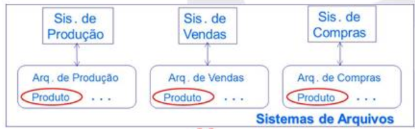

BANCO DE DADOS¶
Conceitos Básicos¶
Antes de falar de bancos de dados propriamente, vale separar quatro ideias que costumam ser confundidas:
| Conceito | Definição |
|---|---|
| Dado | Um elemento bruto, sem contexto. |
| Metadado | Dados que descrevem outros dados, dando-lhes significado (ex.: o tipo e o tamanho de uma coluna). |
| Informação | Um dado com significado, interpretado de forma útil. |
| Conhecimento | O uso da informação para tomar decisões. |
Um banco de dados é uma coleção organizada de informações estruturadas sobre um domínio específico. Em uma arquitetura MVC (Model-View-Controller), os dados são acessados na camada mais baixa, o Model — a camada que contém toda a lógica de CRUD e fornece os dados para as demais camadas.
Já o Sistema Gerenciador de Banco de Dados (SGBD) é o software que gerencia e controla o banco de dados, permitindo aos usuários realizar CRUD e outras operações — é o "motor" que lê, organiza e escreve os dados (MySQL, PostgreSQL, Oracle, etc.).
Evolução dos SGBDs¶
A história dos SGBDs é, em boa parte, a história de como foram sendo resolvidos os problemas de confiabilidade e redundância que surgiam a cada geração anterior.
Sistemas de arquivos (década de 1960). Antes do SGBD, os usuários utilizavam diretamente os sistemas de arquivos do sistema operacional. Cada aplicação tinha o seu próprio arquivo, e todo o controle de qualidade dos dados dependia inteiramente dos programadores. Isso trazia vários problemas:
-
Redundância de dados e de código: como cada aplicação tinha seu próprio arquivo, o mesmo dado podia estar repetido em vários lugares — gerando inconsistência quando atualizado em apenas um deles, sem saber qual versão é a correta (ex.: os sistemas de Produção, Vendas e Compras, cada um com seu próprio arquivo, mas todos repetindo o mesmo campo
Produto).Imagem de referência

-
Dificuldade de acesso: todo acesso dependia do programador estar disponível para escrever o código necessário.
- Formatos heterogêneos: dados dispersos em arquivos isolados podiam ter formatos e valores diferentes, dificultando a escrita de programas que precisassem acessar vários deles.
- Falta de atomicidade: se uma operação dependia de várias transações e uma delas falhasse, o resultado podia ficar inconsistente — garantir que os dados voltassem ao último estado consistente (atomicidade) não era fácil de implementar manualmente.
- Concorrência: acesso simultâneo ao mesmo dado podia gerar inconsistências.
Foi exatamente para resolver esses problemas que o SGBD foi criado.
1ª geração (década de 1970).
| Modelo | Estrutura | Características |
|---|---|---|
| SGBD Hierárquico | Árvore, baseada em ponteiros (cada pai aponta para seus filhos) | Primeiro SGBD com controle centralizado; só permite relações 1:N |
| SGBD em Rede | Grafo (ainda baseado em ponteiros, mas sem redundância) | Reconhece a natureza não hierárquica dos dados e permite relações M:N; porém é complexa de entender e manter, com baixa independência entre dados e programas, e manipulação feita em linguagem de baixo nível |
2ª geração (década de 1980) — SGBD Relacional. Não é baseado em ponteiros, e tem fundamento matemático sólido (relações, funções, conjuntos, álgebra relacional). Os dados são representados por tabelas (relações), organizadas em linhas e colunas, com chaves primárias e estrangeiras; a manipulação é feita por SQL. É hoje o modelo mais utilizado quando é preciso garantir integridade dos dados (Oracle, PostgreSQL, etc.).
| Tipo de chave | Definição |
|---|---|
| Chave primária (PK) | Identificador único de cada linha de uma tabela; garante que duas linhas nunca tenham o mesmo valor; não pode ser nula. |
| Chave estrangeira (FK) | Campo que referencia a PK de outra tabela, permitindo criar relações 1:N e M:N — se os valores de FK puderem se repetir, é 1:N; se puderem ser todos diferentes, a relação tende a M:N. |
3ª geração (década de 1990).
-
SGBD Orientado a Objetos: o modelo mais natural para expressar a realidade ("tudo é objeto"), surgido sob a influência da POO da época. Não tem linguagem padronizada nem base teórica sólida, e o paradigma não foi bem aceito pelo mercado. Nesse modelo, cada objeto (ex.:
Cliente,Conta) carrega tanto seus atributos (A1, A2, ... An) quanto seus métodos (M1, M2, ... Mn), e objetos se comunicam entre si por troca de mensagens (chamadas de método) — por exemplo, um objetoCliente(Mário, Av. S.Carlos, SP, [1234]) referenciando diretamente um objetoContapelo seu identificador.Imagem de referência

-
SGBD Relacional-Objeto: combina o melhor dos dois mundos, aplicando conceitos de OO sobre estruturas relacionais — suporte a tipos de dados abstratos (objetos complexos), baseado em SQL padrão mas com extensões proprietárias de POO (Oracle, PostgreSQL, etc.): os mesmos objetos com atributos e métodos, mas agora persistidos sobre uma estrutura de tabelas subjacente.
Imagem de referência

4ª geração (década de 2000) — SGBD Não-Relacional (NoSQL). Voltado para grandes volumes de dados, priorizando alto desempenho, disponibilidade e consistência eventual, em vez de organizar dados estritamente em linhas/colunas com PK/FK. O esquema é semi-estruturado (admite replicação e ausência de campos, como em JSON), e a escalabilidade é predominantemente horizontal (múltiplos servidores) — ao contrário dos SGBDs relacionais, tipicamente escaláveis verticalmente (MongoDB, Redis, Cassandra).
Modelo Entidade Relacionamento (MER)¶
O MER é uma linguagem diagramática usada para modelar bancos de dados e especificar esquemas conceituais, com quatro elementos gráficos básicos: retângulos (entidades), losangos (relacionamentos), elipses (atributos) e linhas (ligações entre eles).
Legenda da notação

Entidades, relacionamentos e atributos¶
Os componentes básicos do diagrama são:
- Retângulos → Entidades: abstrações de um conceito concreto (cliente, livro) ou abstrato (conta, empréstimo). Uma ocorrência de uma entidade é chamada de instância.
- Losangos → Relacionamentos: abstrações de uma associação entre instâncias de uma ou mais entidades. Em um relacionamento, todas as instâncias envolvidas devem existir; a cada ocorrência chamamos de instância do relacionamento (cada uma carrega uma informação diferente).
- Elipses → Atributos: propriedades descritivas de uma entidade ou relacionamento.
- Linhas: ligam atributos a entidades/relacionamentos, e entidades a relacionamentos.
Relacionamentos: grau, papel, cardinalidade e participação¶
O grau de um relacionamento é a quantidade de entidades envolvidas: unário (auto-relacionamento), binário (duas entidades) ou N-ário (N entidades). O papel é a função que uma dada entidade desempenha no relacionamento — por exemplo, no relacionamento unário "indica" (Cliente → Cliente), uma instância de Cliente pode ter o papel de "padrinho" ou de "afilhado"; já "movimenta" (Cliente—Conta) é um relacionamento binário, e "tem" (Cliente—Conta—Produto) é um relacionamento ternário (N-ário).
Imagem de referência

A cardinalidade (ou multiplicidade, ou cardinalidade máxima) expressa o número máximo de vezes que uma instância de uma entidade pode, no pior caso, participar do relacionamento. Pode ser representada por qualquer inteiro positivo, mas por convenção usa-se \(1\) (um) e \(N\) (muitos) — resultando em relacionamentos \(1{:}1\), \(1{:}N\) ou \(M{:}N\).
A participação (ou obrigatoriedade, ou cardinalidade mínima) especifica se uma instância, para ser cadastrada, precisa estar relacionada com alguma instância de outra entidade do relacionamento. Quando a condição é exigida, a participação é total (relacionamento obrigatório); quando não, é parcial (relacionamento opcional). Por convenção, usam-se os valores \(0\) (participação parcial) e \(1\) (participação total).
Look-here vs. look-across
A cardinalidade e a participação podem ser especificadas do lado da entidade de origem (look-here) ou de destino (look-across) — por exemplo, no relacionamento binário "Movimenta" (Cliente—Conta): o look-here olha de Conta de volta para Cliente; o look-across olha de Cliente para Conta.
Imagem de referência

- Look-here: a FK está na entidade de origem — ela armazena a referência para a de destino, e os dados relacionados ficam do lado de origem. Está relacionada à participação: "esta entidade precisa participar do relacionamento?"
- Look-across: é preciso olhar para a entidade de destino para encontrar os dados relacionados — a FK está do lado de destino. Está relacionada à cardinalidade: "quantos da entidade destino se relacionam com a de origem?"
Na notação de Elmasri & Navathe, a participação é representada por linhas simples (parcial) ou duplas (total); a notação \((min, max)\) é usada quando os valores mínimo e máximo diferem dos padrões (\(0\)/\(1\) e \(1\)/\(N\)).
Exemplos de cardinalidade/participação (Cliente—Movimenta—Conta)
- 1:1, ambos opcionais: um cliente pode movimentar no máximo uma conta; uma conta pode ser movimentada por no máximo um cliente; nenhum dos dois é obrigado a participar para ser cadastrado.
- 1:N (cliente 1, conta N), conta obrigatória: um cliente pode movimentar várias contas; uma conta pode ser movimentada por no máximo um cliente; o cliente não é obrigado a participar, mas toda conta precisa ser movimentada por um cliente para ser cadastrada.
- N:1 (cliente N, conta 1), cliente obrigatório: um cliente pode movimentar no máximo uma conta; uma conta pode ser movimentada por vários clientes; todo cliente precisa movimentar uma conta para ser cadastrado, mas a conta não é obrigada a ter cliente.
- M:N, ambos obrigatórios: um cliente pode movimentar várias contas e uma conta pode ser movimentada por vários clientes; ambas as entidades são obrigadas a participar do relacionamento para serem cadastradas.
Imagens de referência


Duas entidades podem ter mais de um relacionamento entre elas — por exemplo, Endereço—Cliente pode ter os relacionamentos "Trabalho" e "Residencial" simultaneamente, assim como Cliente—Conta pode ter "movimenta" e "é_titular".
Imagem de referência

Tipos de atributos¶
| Tipo | Definição | Exemplo |
|---|---|---|
| Simples | Indivisível | CPF, saldo |
| Composto | Formado por sub-atributos | Endereço (rua, bairro, complemento) |
| Monovalorado | Admite um único valor por instância | CPF, saldo |
| Multivalorado | Admite vários valores por instância | E-mail, telefone |
| Derivado | Calculado a partir de outros atributos | Média de notas, saldo médio |
| Identificador | Cada valor é único | CPF, código de matrícula |
| Discriminador | Identificador parcial — sozinho não identifica, mas combinado com um identificador de outra entidade sim (geralmente vindo de uma entidade forte relacionada) | Data de pagamento |
Diagrama de classificação dos atributos

Toda entidade deve ter atributos, mas nem todo relacionamento precisa ter. A própria cardinalidade do relacionamento influencia onde inserir atributos: é comum colocar atributos em relacionamentos \(M{:}N\), mas pouco comum em relacionamentos \(1{:}1\), \(1{:}N\) ou \(N{:}1\) — nestes últimos, é melhor colocar o atributo na entidade do lado \(N\) em vez do relacionamento.
Entidade ou relacionamento?
Se existe um identificador (ID) próprio, trata-se de uma entidade; caso contrário, pode ser um relacionamento. Um relacionamento com muitos atributos tende, na prática, a "virar" uma entidade.
Onde inserir um atributo \"último acesso\" entre Cliente e Conta, via \"movimenta\"?
- Cenário 1:1 (um cliente movimenta no máximo uma conta, e vice-versa): o atributo pode ser inserido em
Cliente,Contaoumovimenta— nas três situações dá para saber qual foi o último acesso que o cliente fez naquela conta. - Cenário 1:N (cliente 1, conta N — um cliente movimenta várias contas, cada conta tem no máximo um cliente): o atributo não pode ser inserido em
Cliente(saberíamos quando foi o último acesso, mas não em qual conta); pode ser inserido emContaou emmovimenta. - Cenário N:1 (cliente N, conta 1 — um cliente movimenta no máximo uma conta, uma conta é movimentada por vários clientes): pelo raciocínio simétrico, o atributo não pode ser inserido em
Conta(saberíamos quando, mas não qual cliente); pode ir emClienteou emmovimenta. - Cenário N:N: o atributo só pode ser inserido em
movimenta— inseri-lo emClienteouContanão permitiria saber em qual conta um cliente fez o último acesso, nem qual cliente fez o último acesso em uma conta.
Imagens de referência


Onde inserir \"tx_juros\" e \"qtd_parcelas\" entre Financeira (1) —Financia— Venda (N)?
- Cenário 1 (na entidade
Financeira): todas as vendas financiadas pela financeira X sempre teriam a mesma quantidade de parcelas e taxa de juros, o que não é razoável — ruim, porque os atributos ficam presos à financeira, não à negociação específica. - Cenário 2 (na entidade
Venda): quando a venda for à vista, os atributos não devem ser preenchidos, ou devem receber um valor especial (ex.-1) — usar0seria ambíguo (não dá para saber se foi à vista ou se não houve cobrança de juros). Esse projeto é aceitável. - Cenário 3 (no relacionamento
Financia): a taxa de juros e a quantidade de parcelas só são cadastradas quando a venda é de fato financiada (vendas à vista simplesmente não têm esses atributos, pois a instância do relacionamento não existe) — podendo inclusive ser negociadas caso a caso. Este é o melhor projeto conceitual.
Imagens de referência


Relacionamento unário¶
Envolve apenas uma entidade, que assume dois papéis diferentes na mesma associação (por exemplo, "funcionário supervisiona funcionário"). No exemplo "indica" (Cliente → Cliente), a cardinalidade é \(1{:}N\): um cliente "padrinho" pode indicar vários "afilhados", mas cada "afilhado" tem no máximo um "padrinho".
Imagem de referência

Relacionamento identificador¶
Permite usar o atributo identificador de uma entidade forte para identificar outra entidade fraca — útil quando essa segunda entidade não tem, por si só, atributos capazes de identificá-la unicamente.
Uma entidade que tem um atributo discriminador é, por definição, uma entidade fraca: ela depende do identificador de uma entidade forte e, portanto, não possui seu próprio atributo identificador. Toda instância de entidade fraca deve estar relacionada a no máximo uma instância de entidade forte. Decorre daí que:
- relações \(1{:}1\) não devem ter atributo discriminador;
- relações \(1{:}N\) devem ter o discriminador na entidade fraca;
- a cardinalidade do lado da entidade forte é sempre \(1\);
- a participação da entidade fraca é sempre obrigatória (linha dupla) — ou seja, a entidade fraca é existencialmente dependente da entidade forte.
Cuidado ao usar
Não é uma boa prática usar o relacionamento identificador apenas para impor participação obrigatória — é melhor usar participação obrigatória sem relacionamento identificador nesses casos, pois o identificador aumenta o acoplamento entre entidades e dificulta a manutenção/legibilidade.
Na notação, o relacionamento identificador fica com losango duplo, a entidade fraca com retângulo duplo, e o atributo identificador composto (herdado) fica sublinhado: no exemplo Banco(numB) —tem(1:N)— Agência(numA) —possui(1:N)— Conta(numC), tanto Agência quanto Conta são entidades fracas, com tem e possui como relacionamentos identificadores (losango duplo).
Imagem de referência

Example
Para o mesmo esquema Banco(numB) —tem— Agência(numA) —possui— Conta(numC): o atributo identificador das entidades fracas é a concatenação encadeada de atributos da entidade forte: identificador de Agência \(= (numB, numA)\) e de Conta \(= (numB, numA, numC)\).
Imagem de referência

Relacionamento N-ário¶
Um relacionamento é genuinamente N-ário quando toda vez que ele ocorre envolve, de fato, as mesmas \(N\) entidades simultaneamente — e não pode ser decomposto em relacionamentos binários independentes. Por exemplo, Cliente—Contrata—Conta, com Produto também ligado a Contrata por cima, forma um relacionamento ternário genuíno: cada instância de "contrata" é uma combinação específica de um cliente, um produto e uma conta.
Imagem de referência

Como descobrir a cardinalidade de uma entidade em um relacionamento N-ário. É preciso considerar sempre o pior caso, no formato: "1 instância de X e 1 instância de Y podem se relacionar com, no máximo, quantas instâncias de Z (1 ou N)?"
Imagem de referência

Descobrindo a cardinalidade de Cliente—Produto—Conta—Contrata
- Lado Conta (fixando Cliente+Produto): "um cliente e um produto podem se relacionar com, no máximo, quantas contas?" — como o cliente C1 contratou o produto P1 para as contas CC1 e CC2, a cardinalidade do lado Conta é N.
- Lado Cliente (fixando Produto+Conta): "um produto e uma conta podem se relacionar com, no máximo, quantos clientes?" — como, na conta CC1, o produto P1 foi contratado pelos clientes C1 e C2, a cardinalidade do lado Cliente também é N.
- Lado Produto (fixando Cliente+Conta): "um cliente e uma conta podem se relacionar com, no máximo, quantos produtos?" — como o cliente C1, na conta CC1, contratou os produtos P1 e P2, a cardinalidade do lado Produto também é N.
- O relacionamento resultante é \(N{:}N{:}N\) em todos os lados. É importante notar que clientes diferentes (C1, C2) podem ter produtos diferentes (P2, P3) na mesma conta (CC1) — pois o produto é "do cliente em uma conta", não da conta nem do cliente isoladamente. Isso corresponde à tabela
Contrata(Cliente, Produto, Conta)com linhas como(C1,P1,CC1),(C1,P2,CC1),(C2,P1,CC1),(C2,P3,CC1), ...
Imagens de referência


Participação em relacionamentos N-ários: no esquema (1), Cliente, Produto e Conta têm participação parcial (linha simples) em Contrata; no esquema (2), Produto tem participação total (linha dupla), enquanto Cliente e Conta continuam parciais.
Imagem de referência

No primeiro esquema, nenhuma das três entidades é obrigada a participar do relacionamento "contrata" — o cadastro de qualquer uma delas independe das outras. No segundo, o cadastro de produto só acontece se ele já estiver relacionado a um cliente e uma conta (produto não existe sem a relação "contrata", pois depende de cliente e conta). Em ambos os esquemas, sempre que a relação ocorre, ela envolve exatamente um cliente, um produto e uma conta.
Relacionamento N-ário vs. binário¶
Atenção: nem todo relacionamento com 3+ entidades é ternário
Se todos os clientes de uma conta sempre têm os mesmos produtos, então na verdade existe apenas um relacionamento binário entre conta e produto — ou seja, no esquema Cliente—movimenta(N)—Conta(N)—contrata(N)—Produto(N), o par Conta—contrata—Produto pode, de fato, ser um relacionamento binário independente de Cliente.
Imagem de referência

Apesar de cliente não estar diretamente relacionado a produto, a partir de conta é possível descobrir todos os produtos de um cliente por transitividade.
Um sinal de alerta é: se, em um relacionamento aparentemente ternário, uma entidade tem cardinalidade \(1\), provavelmente existe uma relação binária escondida por trás, e não uma relação ternária genuína. No caso a seguir (Agência—Conta Corrente—Cliente), ao analisar o pior caso lado a lado — "uma agência e um cliente se relacionam com, no máximo, quantas contas?" (N) e "uma conta corrente e um cliente se relacionam com, no máximo, quantas agências?" (1, pois toda conta corrente pertence a exatamente uma agência) — a cardinalidade do lado Agência fecha em 1, o que denuncia que não é uma relação ternária genuína: uma tabela movimenta(Cliente, Conta, Agência) montada como se fosse ternária geraria linhas contraditórias, como um mesmo cliente aparecendo associado à mesma conta mas com agências diferentes, quando na realidade a agência de uma conta é fixa e não deveria variar por cliente.
Imagens de referência


Nesse exemplo, apesar de 1 cliente com 1 conta corrente só poder fazer parte de 1 agência, 1 cliente pode fazer parte de N agências — gerando uma contradição. Já "1 conta corrente pode fazer parte de apenas 1 agência" está logicamente correto. O problema é que a relação, como modelada, permite que uma mesma conta esteja atrelada a mais de uma agência — por exemplo, a tabela movimenta(Cliente, Conta, Agência) ficaria com linhas como (C1, CC1, A1) e (C2, CC1, A2), implicando (erradamente) que a conta CC1 pertence tanto à agência A1 quanto à A2.
Imagem de referência

A solução correta separa as relações: Agência(1) —(N)— Conta Corrente(N) —(N)— Cliente, dois relacionamentos binários distintos.
Imagem de referência

Em geral: se, a partir de uma instância de entidade A, é possível determinar uma instância de entidade B, então A e B formam um relacionamento binário, não N-ário.
Por outro lado, o inverso também é verdade: 3 relacionamentos binários não substituem 1 relacionamento ternário genuíno — quando as três entidades realmente só fazem sentido combinadas simultaneamente, decompor em pares perde informação. Decompor Contrata(Cliente, Produto, Conta) em três relacionamentos binários CP(Cliente, Produto), CCC(Cliente, Conta) e PCC(Produto, Conta) permite saber quais são os produtos de um cliente, quais são as contas de um cliente e quais são os produtos de uma conta, isoladamente — mas não permite saber quais são os produtos de um cliente especificamente em uma conta (quando um cliente pode ter produtos diferentes em contas diferentes); além disso, consultas sobre o esquema decomposto podem retornar combinações contraditórias que nunca existiram de fato na relação ternária original (ex.: via CP um cliente parece ter um produto que, combinando CCC+PCC, não existe naquela conta).
Imagem de referência

Entidade associativa¶
Quando um relacionamento pode ocorrer sem a presença de uma terceira entidade (isto é, quando as entidades podem se relacionar entre si de forma independente, mas também é útil capturar uma relação conjunta), usa-se uma entidade associativa em vez de um relacionamento N-ário: um relacionamento binário vira uma entidade (com linha superior no retângulo, mantendo o losango internamente), e um segundo relacionamento liga essa entidade associativa a uma terceira entidade — sem nenhuma ligação direta entre os dois relacionamentos; o segundo relacionamento pode ocorrer sem envolver, necessariamente, essa terceira entidade.
Imagem de referência

Example
Para Cliente—contrata(entidade associativa)—Conta, ligada por participa(N:N) a Promoção: um cliente, ao contratar uma conta, não é obrigado a participar de uma promoção — mas toda vez que o relacionamento "participa" ocorrer, ele necessariamente envolve a entidade associativa "contrata" e a entidade "Promoção". Note que um cliente aprovado mas sem conta, ou uma conta criada mas ainda sem cliente, não pode participar de uma promoção do banco, pois só um cliente com conta já contratada (uma instância de "contrata") pode participar de promoções.
Imagens de referência


Entidade associativa vs. relacionamento N-ário — a diferença central: a participação total da entidade associativa torna o esquema com entidade associativa equivalente ao relacionamento ternário direto. No esquema (1), Cliente—contrata(entidade associativa)—Conta, com participa ligando contrata a Promoção, não é equivalente a um ternário genuíno se a participação de contrata em participa for parcial; mas se essa participação fosse total (toda conta contratada participa obrigatoriamente de alguma promoção), o esquema se tornaria equivalente ao esquema (2), um relacionamento ternário direto Cliente—participa(N:N)—Conta, com Promoção ligada a participa. Nesses casos de participação total, é preferível usar diretamente um relacionamento N-ário em vez de uma entidade associativa.
Imagem de referência

Herança¶
A herança cria uma hierarquia de entidades, em que sub-entidades herdam todos os atributos e relacionamentos das super-entidades. É recomendável usá-la apenas quando as sub-entidades têm atributos ou relacionamentos específicos — caso contrário, um atributo simples resolve melhor. Na notação: a super-entidade fica no topo, ligada por uma linha a um pequeno círculo (marcado d ou o) que representa a generalização/especialização, do qual partem as ligações para as sub-entidades — cada sub-entidade pode ter atributos e relacionamentos próprios, além dos herdados da super-entidade.
Imagem de referência (legenda da notação)

A herança é classificada em dois eixos independentes:
| Eixo | Valores | Significado |
|---|---|---|
| Disjunção | Disjunta (d) |
Cada instância da super entidade se especializa em exatamente uma sub-entidade. |
Sobreposta (o) |
Pelo menos uma instância se especializa em mais de uma sub-entidade simultaneamente. | |
| Totalidade | Total (linha dupla) | Toda instância da super entidade é especializada em pelo menos uma sub-entidade. |
| Parcial (linha simples) | Pelo menos uma instância não é especializada em nenhuma sub-entidade. |
As quatro combinações (Cliente → PF/PJ/ME/MEI/Privado/Público/Aposentado)
- Herança PD (Parcial/Disjunta):
Clientese especializa emPF,ME,MEI— os clientes \(c_1,c_2\) (PF), \(c_4,c_5\) (ME) e \(c_6,c_7\) (MEI) não se sobrepõem entre si (disjunta), mas \(c_3\) não pertence a nenhuma sub-entidade (parcial). - Herança TD (Total/Disjunta):
Clientese especializa emPF,PJ— todo cliente \(c_1\) a \(c_7\) está em exatamente uma das duas (total, sem sobra), e os conjuntos não se sobrepõem (disjunta). - Herança PO (Parcial/Sobreposta):
Clientese especializa emPrivado,Aposentado— \(c_{20}\) aparece em ambos os grupos simultaneamente (sobreposta), mas \(c_{30}, c_{40}\) não pertencem a nenhum dos dois (parcial). - Herança TO (Total/Sobreposta):
Clientese especializa emPrivado,Público,Aposentado— todo cliente \(c_{10}\) a \(c_{70}\) está em pelo menos uma sub-entidade (total), e alguns (como \(c_{20}\) ou \(c_{70}\)) estão em mais de uma simultaneamente (sobreposta).
Imagens de referência


Se existe apenas uma sub-entidade, a herança é dita direta, e não pode ser classificada como disjunta/sobreposta nem total/parcial (essas classificações só fazem sentido com múltiplas sub-entidades concorrendo entre si) — na notação, o círculo de generalização desaparece, e a ligação vira uma simples linha com o símbolo de especialização entre X e Y.
Imagem de referência

Se as sub-entidades não têm atributos ou relacionamentos específicos, é preferível usar um atributo simples do tipo "tipo"/"categoria" no lugar de modelar herança — por exemplo, em vez de especializar Conta em Poupança, Salário, Básica, Especial (sem atributos próprios adicionais), basta um atributo tipo na própria entidade Conta.
Imagem de referência

Particularidades e limitações do MER¶
O MER tem poder de expressão limitado — valores válidos e pré/pós-condições de negócio precisam ser documentados separadamente, fora do diagrama. Além disso, esquemas ER diferentes podem acabar sendo equivalentes na prática — por exemplo, Conta—movimenta(N:N)—Cliente é equivalente a transformar "movimenta" em uma entidade associativa Movimentação, ligada por sofre(1:N) a Conta e por faz(N:1) a Cliente: as mesmas combinações Cliente×Conta continuam representadas, apenas via um nível extra de indireção.
Imagem de referência

Dúvidas frequentes de modelagem¶
| Dúvida | Regra de decisão | Ilustração |
|---|---|---|
| Atributo ou entidade? | Meramente descritivo → atributo. Tem identificador explícito → entidade. | agência como atributo simples de Conta é aceitável; mas se Agência tem seu próprio identificador cod, é melhor modelá-la como entidade, ligada a Conta por um relacionamento tem (1:N). |
| Atributo composto/multivalorado ou entidade? | Exclusivo de uma entidade → atributo. Pode ser compartilhado entre várias entidades → entidade. | fones (composto de DDD/PRE/SUF) e local de trabalho (composto de Endereço/CEP) como atributos multivalorados de Cliente funcionam; mas se "Fones" e "Local de Trabalho" puderem ser compartilhados/reutilizados por mais de um cliente, é melhor virarem entidades próprias, ligadas por relacionamentos tem e trabalha. |
| Atributo ou herança? | Pode haver inconsistência entre os conceitos → herança. Caso contrário → atributo. | Colocar título eleitoral e contrato social como atributos simples de Cliente permite, inconsistentemente, que um CNPJ tenha título eleitoral; o correto é especializar Cliente em PF (com título eleitoral) e PJ (com contrato social) via herança disjunta. |
| Relacionamento ou entidade? | Tem identificador explícito → entidade. Caso contrário → pode ser relacionamento. | Modelar movimentação como relacionamento N:N simples entre Conta e Cliente não permite dar a ela um identificador próprio (ID); o correto é transformá-la em uma entidade Movimentação, ligada a Conta (1:N, via sofre) e a Cliente (N:1, via faz). |
| Relacionamento N-ário ou entidade associativa? | Sempre envolve todas as entidades simultaneamente → relacionamento N-ário. Caso contrário → entidade associativa. | Conta—contrata(entidade associativa)—Cliente—Produto, ligada por tem(1:N) a Promoção — como nem toda contratação precisa estar associada a uma promoção, contrata fica como entidade associativa em vez de virar parte de um relacionamento N-ário só. |
Imagens de referência


Requisitos para um bom MER¶
Um bom esquema MER precisa satisfazer vários requisitos simultaneamente:
1. Ser sintaticamente correto — respeitar as regras de construção do diagrama. Erros comuns: (1) ligar duas entidades sem um relacionamento entre elas; (2) ligar dois relacionamentos diretamente sem usar uma entidade associativa; (3) ligar um atributo a mais de uma entidade ou relacionamento.
Imagem de referência

2. Ser semanticamente correto — o esquema não pode ter atributos, cardinalidades, participações ou graus mal especificados, nem capturar mais de uma realidade ao mesmo tempo. Alguns exemplos (Conta—movimenta—Cliente):
- Onde colocar
saldo? EmConta(✓): cada conta tem seu próprio saldo, visto igualmente por todos os seus clientes. Emmovimenta(✗, a menos que seja essa a intenção): uma conta passaria a ter um saldo diferente para cada cliente. EmCliente(✗, a menos que seja essa a intenção): um cliente teria o mesmo saldo repetido em todas as suas contas. - Cardinalidade de
Conta—pertence—Agência: \(N{:}1\) (cada conta pertence a uma única agência, que pode ter várias contas) está correto; \(1{:}N\) inverteria o sentido (uma conta poderia pertencer a várias agências, mas uma agência só teria uma conta) — semanticamente errado. - Participação em
Conta—pertence—Agência: linha dupla emConta(toda conta precisa ter agência para ser cadastrada) é um esquema "bom"; linha dupla também emAgência(toda agência precisa ter conta) seria "estranho"; linha dupla em ambos gera dependência mútua desnecessária; o esquema totalmente flexível (ambas opcionais) também é aceitável, dependendo da regra de negócio. Cliente—movimenta—Conta—contrata—Produtovs. entidade associativa diretaCliente—Contrata(N:N)—ContacomProdutoligado aContrata: o primeiro esquema garante que clientes não podem ter produtos diferentes na mesma conta; o segundo permite que clientes tenham produtos diferentes na mesma conta — ambos são semanticamente corretos, a escolha depende da realidade modelada.- Onde conectar
Agência:Cliente—movimenta—Conta—pertence(N:1)—Agênciagarante que uma conta pertence a exatamente uma agência; já ligarAgênciadiretamente amovimenta(com cardinalidade 1) permitiria, erradamente, que uma mesma conta existisse em mais de uma agência. - Redundância entre
CEPerua: concentrar tudo (COD,rua) na entidadeCEP, ligada aClienteviamora, evita inconsistência entre código postal e nome da rua; já deixarCEPcomo atributo composto direto deCliente(com sub-atributosCODerua) permite, inconsistentemente, que a mesma rua tenha mais de um CEP e vice-versa.
Imagens de referência


3. Evitar (ou controlar) construções redundantes — redundância pode melhorar desempenho em certos cenários, mas também pode gerar dados inconsistentes se não for cuidadosamente controlada. Exemplo: no esquema Cliente—movimenta—Conta—pertence(N:1)—Agência, com Agência também ligada a Cliente via faz parte(1:N), e um atributo qtd contas na própria Agência — tanto qtd contas quanto faz parte são construções redundantes, pois ambas já são deriváveis de pertence/movimenta, e podem gerar dados contraditórios se não forem controladas por programação:
qtd contas: embora seja mais rápido lerqtd contasdo que contar viapertence, é preciso programar uma rotina para atualizar esse atributo sempre que uma conta for criada, excluída ou trocada de agência — valendo a pena avaliar o custo × benefício dessa redundância.faz parte: é mais rápido saber a agência de um cliente viafaz partedo que navegando pormovimenta→pertence, masfaz partepode acabar registrando uma agência cujo cliente não tem, de fato, nenhuma conta ali — também exigindo uma rotina para impedir essa contradição.
Imagens de referência


4. Capturar o aspecto temporal, quando relevante — ou seja, guardar o histórico de um atributo em vez de apenas seu valor atual. Alguns exemplos progressivos:
- Saldo médio de uma conta:
saldo médiocomo atributo simples deContaguarda apenas o valor atual; transformá-lo em entidadeSaldo Médio(comdataevalor), ligada portem(1:N) aConta, guarda o histórico completo dos saldos médios ao longo do tempo. - Empréstimos de uma conta:
faz(1:1) para uma entidadeEmpréstimo(comdata,valor) guarda só o empréstimo atual — ao longo do tempo, uma conta pode fazer vários empréstimos, mas só o mais recente fica registrado (o atual sobrepõe o anterior); mudar a cardinalidade parafaz(1:N) passa a guardar o histórico de todos os empréstimos (podendo inclusive usar um instante em milissegundos no lugar da data, para granularidade maior). - Títulos negociados:
Conta—negocia(N:1)—Título(comvaloremTítulo) guarda só os dados do título atual; jáConta—negocia(N:N)—Título, comvalor negociadoedatano próprio relacionamentonegocia(evalor atualficando emTítulo), guarda o histórico de todos os títulos negociados — inclusive se o cliente negociar o mesmo título mais de uma vez. - Compra de ações: indo um passo além,
Conta—compra(N:N)—Ações, comvalor negociadoeinstanteno relacionamentocompra(evalor atualemAções), já captura quase todo o histórico de ações compradas — mas, para registrar múltiplas recompras da mesma ação, é preciso queinstanteseja parte do identificador do relacionamento (senão uma segunda compra da mesma ação na mesma conta sobrescreveria a primeira).
Imagens de referência


5. Ser completo — é muito mais fácil corrigir um erro no projeto conceitual do que em qualquer fase posterior do projeto do banco de dados. O projeto conceitual pode ser construído a partir de:
- Informações já existentes, usando:
- Engenharia reversa: feita automaticamente por uma ferramenta CASE a partir de um banco já existente;
- Estratégia Bottom-Up: 1º atributos → 2º entidades → 3º relacionamentos → 4º herança.
- Conhecimento de especialistas, usando:
- Estratégia Top-Down: 1º entidades → 2º relacionamentos → 3º heranças → 4º atributos;
- Estratégia Inside-Out: igual à Top-Down, mas começando pelas entidades mais importantes do domínio.
Modelo Relacional¶
O modelo relacional é um modelo lógico — menos abstrato que o conceitual (MER), mas que ainda não considera aspectos físicos de armazenamento, acesso ou desempenho. Tem uma base formal sólida (teoria dos conjuntos) e é construído sobre conceitos simples: relações, atributos, tuplas e domínios. É baseado em tabelas que não podem ter subtabelas, e é a base direta sobre a qual o SQL foi definido. Vale notar que diversos conceitos do modelo conceitual não são implementados de forma tão direta no modelo relacional — é justamente esse "gap" que o processo de mapeamento (visto mais adiante) precisa resolver.
Definições fundamentais¶
- Domínio: conjunto de valores atômicos possíveis para um atributo.
-
Relação: dados os conjuntos \(D_1, \ldots, D_n\) (domínios não necessariamente distintos), \(R\) é uma relação sobre esses \(n\) conjuntos se \(R\) é um conjunto de tuplas \(\langle v_1, \ldots, v_n \rangle\) onde \(v_1 \in D_1, \ldots, v_n \in D_n\) — ou seja, \(R\) é um subconjunto do produto cartesiano \(D_1 \times \cdots \times D_n\).
Example
Para \(\text{Nomes} = \{\text{Ana}, \text{Rita}, \text{Rui}\}\) e \(\text{Sexos} = \{M, F\}\): uma tupla é, por exemplo, \((\text{Ana}, F)\); o produto cartesiano \(\text{Nomes} \times \text{Sexos} = \{(\text{Ana},M),(\text{Ana},F),(\text{Rita},M),(\text{Rita},F),(\text{Rui},M),(\text{Rui},F)\}\) (todas as 6 combinações possíveis); e a relação \(\text{Clientes} = \{(\text{Ana},F),(\text{Rita},F),(\text{Rui},M)\}\) é um subconjunto desse produto cartesiano (apenas as combinações que de fato existem).
Imagem de referência

Relação vs. tabela: terminologia
Para a relação Cliente(CPF, Nome, Sexo, Escolaridade) com tuplas (111,Ana,F,Médio), (222,Rita,F,Superior), (333,Rui,M,Mestrado): os domínios dos atributos são os conjuntos de valores possíveis para cada coluna (ex.: {111,222,333} para CPF, {Ana,Rita,Rui} para Nome); o esquema da relação (intenção) é a estrutura Cliente(CPF, Nome, Sexo, Escolaridade), com seus atributos; e a instância da relação (extensão) são as tuplas de fato armazenadas. O grau é o número de atributos (aqui, 4) e a cardinalidade é o número de tuplas (aqui, 3).
Imagem de referência

Propriedades de uma relação:
- toda relação tem um número fixo de atributos distintos;
- o valor
NULLé usado quando um atributo não tem valor, ou este é desconhecido; - a ordem dos atributos e das tuplas é irrelevante — não há ordenação implícita entre tuplas, e os valores se associam aos atributos independentemente de qualquer ordem.
Chaves¶
O conceito de chave serve para identificar e referenciar tuplas de forma inequívoca.
| Tipo de chave | Definição |
|---|---|
| Chave candidata | Um atributo (chave simples) ou concatenação de atributos (chave composta) cujos valores distinguem uma tupla de todas as demais da relação — uma possível PK, que deve ter valores distintos e obrigatórios. |
| Chave primária (PK) | A chave candidata escolhida para identificar as tuplas; frequentemente usada para seleção; nunca admite NULL. |
| Chave estrangeira (FK) | Atributo (ou concatenação) que referencia a PK de outra tabela, usada para relacionar tuplas entre relações; admite NULL quando a participação é opcional (não precisa ser única nem obrigatória). |
| Chave alternativa (AK) | A chave candidata que não foi escolhida como PK; não participa de relacionamentos via FK. |
Uma chave candidata deve ser mínima: se é simples, já é mínima por definição; se é composta, é preciso verificar que nenhum subconjunto próprio dos atributos já seria suficiente para identificar a tupla (senão haveria redundância na chave). Por exemplo, para Cliente(Matrícula, CPF, Nome): tanto Matrícula quanto CPF, isoladamente, já identificam uma tupla — são chaves candidatas simples. Já em Dependente(Matrícula, Num, Nome), nem Matrícula nem Num sozinhos identificam a tupla (várias matrículas repetem o mesmo Num, e vice-versa) — apenas a combinação (Matrícula, Num) é mínima e identifica univocamente, formando uma chave candidata composta. Usar uma chave composta não-mínima (ex.: Matrícula+CPF em vez de só Matrícula ou só CPF) pode gerar inconsistência, permitindo várias matrículas para o mesmo CPF e vice-versa.
Imagem de referência (chaves candidatas)

Continuando o exemplo: elegendo Matrícula como chave primária de Cliente e (Matrícula, Num) como chave primária (composta) de Dependente.
Imagem de referência (chaves primárias)

O atributo Matrícula em Dependente também é uma chave estrangeira simples, referenciando a PK de Cliente.
Imagem de referência (chave estrangeira)

Auto-relacionamento
Um auto-relacionamento é uma relação entre a mesma entidade/tabela, diferenciando-se apenas pelos papéis desempenhados (ex.: um funcionário que supervisiona outro funcionário) — na tabela Empregado(CodEmpregado, Nome, CodChefe), CodEmpregado é PK (simples), e CodChefe é FK (simples) referenciando o próprio CodEmpregado de outra linha da mesma tabela.
Imagem de referência

Por fim, no exemplo Cliente(Matrícula, CPF, Nome), como Matrícula já foi escolhida como PK, CPF passa a ser a chave alternativa (AK): continua sendo uma chave candidata válida, mas não participa de relacionamentos via FK.
Imagem de referência (chave alternativa)

Restrições de integridade¶
As restrições de integridade são regras sobre os valores armazenados nas relações, com o objetivo de garantir sua consistência:
| Restrição | Regra |
|---|---|
| De domínio | Todo valor de um atributo deve ser atômico (simples e monovalorado) e pertencer ao domínio definido para aquele atributo. |
| De chave | Todo valor de chave primária deve ser mínimo e único na relação. |
| De integridade da entidade | Chaves primárias nunca podem ter valor NULL. |
| De integridade referencial | Todo valor de uma chave estrangeira deve aparecer na chave primária da tabela referenciada (ou ser NULL, se a FK for opcional). |
Integridade referencial na prática
- Inserções e atualizações podem violar: restrição de domínio (valor não atômico ou diferente do permitido), de chave (valor duplicado de chave primária), de integridade de entidade (valor
NULLpara chave primária), ou de integridade referencial (o valor da chave estrangeira não existe na chave primária referenciada). Solução padrão: rejeitar a operação e lançar mensagem de erro. - Exclusões só podem violar a restrição de integridade referencial (o valor da chave primária existe em uma chave estrangeira que a referencia). Soluções possíveis: rejeitar e lançar erro; excluir em cascata (apagando também as tuplas que referenciam); ou definir o valor como
NULL(ou um valor padrão) na FK das tuplas dependentes.
Imagens de referência


Além das restrições de integridade (estruturais, aplicadas automaticamente pelo SGBD), existem as restrições semânticas, que impõem regras de negócio e precisam ser implementadas explicitamente pelos programadores, já que não são garantidas automaticamente pelo modelo relacional — por exemplo, "um empregado não pode ter salário maior que seu superior imediato".
Notação simplificada¶
Uma notação textual compacta para esquemas de tabelas: o nome da chave primária vem sublinhado; uma seta (→) indica uma chave estrangeira, apontando para a tabela/coluna referenciada; colchetes [ ] indicam valor único (unique); e ! indica valor obrigatório (not null). Por exemplo: FUNCIONARIO(FUNC_PK, nome, ..., DEPTO_FK!), onde DEPTO_FK → DEPARTAMENTO(COD); e DEPARTAMENTO(COD, nome, ..., [CHEFE_FK]!), onde CHEFE_FK → (FUNC_PK).
Imagem de referência

Álgebra relacional¶
A álgebra relacional foi desenvolvida para descrever operações sobre um banco de dados relacional, e serve de base conceitual para entender o próprio SQL (uma linguagem de consulta estruturada construída sobre essas operações).
Compatibilidade de domínio. Duas relações \(A(a_1, \ldots, a_n)\) e \(B(b_1, \ldots, b_n)\) são compatíveis em domínio se ambas têm o mesmo grau \(n\) e \(\text{Dom}(a_i) = \text{Dom}(b_i)\) para todo \(1 \leq i \leq n\) — pré-requisito para as operações de conjunto a seguir.
Example
Aluno(nome, idade, curso), Professor(nm, idd, crs) e Funcionario(nome, curso, idade): Aluno é compatível em domínio com Professor (mesmos domínios, na mesma ordem: nome/char(30), idade/int, curso/char(10), apesar dos nomes de atributo diferentes), mas não é compatível com Funcionario (a ordem dos atributos — idade/curso trocados — não bate). Ou seja: para compatibilidade de domínio, a estrutura de uma relação importa mais que sua semântica, e a ordem dos atributos prevalece.
Imagem de referência

Operações sobre conjuntos¶
| Operação | Notação | Definição |
|---|---|---|
| União | \(A \cup B\) | Une as tuplas de \(A\) e \(B\). |
| Interseção | \(A \cap B\) | Retorna as tuplas comuns a \(A\) e \(B\). |
| Diferença | \(A - B\) | Retorna as tuplas de \(A\) que não estão em \(B\). |
| Produto cartesiano | \(A \times B\) | Combina cada tupla de \(A\) com cada tupla de \(B\). |
| União exclusiva | \(A \mathbin{\overline{\cup}} B\) | \((A \cup B) - (A \cap B)\) — tuplas que estão em \(A\) ou \(B\), mas não em ambas. |
Exemplos
Para Aluno(nome,idade,curso) = {José,25,Computação; Pedro,21,Química; Paulo,19,Física; Ana,19,Computação} e Professor(nm,idd,crs) = {Ruth,35,Computação; Rosa,32,Química; José,25,Computação} (José é aluno de Doutorado e professor, simultaneamente):
- União —
Aluno ∪ Professor(retornar todos os alunos e professores da universidade) ={José,25,Computação; Pedro,21,Química; Paulo,19,Física; Ana,19,Computação; Ruth,35,Computação; Rosa,32,Química}— José só aparece uma vez, mesmo estando nas duas relações. (Por convenção, usam-se os nomes de atributos da relação à esquerda quando não especificado.) - Interseção —
Aluno ∩ Professor(retornar todos que, ao mesmo tempo, são alunos e professores) ={José,25,Computação}. - Diferença —
Aluno - Professor(todos os alunos que não são professores) ={Pedro,21,Química; Paulo,19,Física; Ana,19,Computação}; jáProfessor - Aluno(todos os professores que não são alunos) ={Ruth,35,Computação; Rosa,32,Química}— note que a diferença não é comutativa: \(A-B \neq B-A\). - Produto cartesiano — para
Curso(curso,departamento) = {Computação,EC; Computação,CC; Matemática,MA}e o mesmoProfessorde antes,Curso × Professor(retornar todas as combinações entre cursos e professores) produz \(3 \times 3 = 9\) tuplas: cada curso combinado com cada professor (Computação,EC,Ruth,35,Computação;Computação,EC,Rosa,32,Química;Computação,EC,José,25,Computação; e assim por diante paraComputação,CCeMatemática,MA). - União exclusiva —
Aluno ⊎ Professor(retornar todos que não são, ao mesmo tempo, aluno e professor) ={Pedro,21,Química; Paulo,19,Física; Ana,19,Computação; Ruth,35,Computação; Rosa,32,Química}— José fica de fora, já que está nos dois grupos.
Imagens de referência


Operações relacionais unárias¶
Produzem, a partir de uma única relação de origem, uma nova relação que é um subconjunto horizontal (muda linhas) ou vertical (muda colunas) dela.
-
Seleção (\(\sigma\)): \(\sigma_{\text{<condição>}}(\text{Relação})\) — seleciona as tuplas que satisfazem uma condição (expressão booleana com
and,or,not,=,≠,<,<=,>,>=), produzindo um subconjunto horizontal.Example
Para
Aluno(nome,idade,curso) = {José,25,Computação; Pedro,21,Química; Paulo,19,Física; Ana,19,Computação}: retornar os alunos maiores de 20 anos do curso de Computação — \(\sigma_{\text{idade>20 and curso="Computação"}}(\text{Aluno}) = \{\text{José},25,\text{Computação}\}\). Também pode ser feito encadeando duas seleções: \(\sigma_{\text{idade>20}}(\sigma_{\text{curso="Computação"}}(\text{Aluno}))\) — a seleção interna produz{José,25,Computação; Ana,19,Computação}, e a externa filtra para{José,25,Computação}.Imagens de referência


-
Projeção (\(\pi\)): \(\pi_{\text{<atributos>}}(\text{Relação})\) — seleciona apenas as colunas de interesse, produzindo um subconjunto vertical.
Example
\(\pi_{\text{nome,curso}}(\text{Aluno}) = \{\text{José,Computação; Pedro,Química; Paulo,Física; Ana,Computação}\}\) (todos os alunos e seus cursos). Pode haver eliminação de linhas duplicadas: \(\pi_{\text{curso}}(\text{Aluno}) = \{\text{Computação; Química; Física}\}\) (apenas 3 cursos distintos, mesmo havendo 4 alunos).
Imagens de referência


-
Seleção + Projeção combinadas: \(\pi_{\text{nome,curso}}(\sigma_{\text{idade>20 and curso="Computação"}}(\text{Aluno}))\) — retorna os nomes e cursos dos alunos maiores de 20 anos do curso de Computação.
Imagem de referência

Operações relacionais binárias¶
Produzem uma nova relação que é, essencialmente, um subconjunto (via seleção) do produto cartesiano das relações envolvidas. Em geral, após o produto cartesiano, é necessário comparar atributos compatíveis em domínio para filtrar as tuplas do resultado final.
-
Junção (\(\bowtie\)): \(R1 \bowtie_{\text{<condição>}} R2 = \sigma_{\text{<condição>}}(R1 \times R2)\) — retorna apenas as tuplas do produto cartesiano que satisfazem a condição dada.
Example
Com
Alunocomo antes maisJoão,34,Computação, eProfessor(nm,idd,crs) = {Ruth,35,Computação; Rosa,32,Química; José,25,Computação}: retornar todos os alunos mais velhos que qualquer professor — \(\text{Aluno} \bowtie_{\text{Aluno.idade > Professor.idade}} \text{Professor} = \{\text{João,34,Computação,Rosa,32,Química}; \text{João,34,Computação,José,25,Computação}\}\).Imagens de referência


-
Divisão (\(\div\)): \(R(X) = R_1(A) \div R_2(B)\), onde \(B \subseteq A\) e \(X = A-B\) — produz uma relação \(R(X)\) com as tuplas de \(R_1(A)\) que se combinam com todas as tuplas de \(R_2(B)\).
Imagem de referência (sintaxe)

Example
Para
Matricula(nome-a,discipl,nota) = {José,IF111,9.0; Pedro,IF333,3.5; Paulo,IF111,7.5; Paulo,IF333,6.5; José,IF333,10.0; José,IF222,6.5; Ana,IF222,7.0}eAulas(nome-p,discipl) = {Lopes,IF111; Joana,IF222; Lopes,IF333}: retornar os alunos que cursam todas as disciplinas ministradas pelo Prof. Lopes — \(\pi_{\text{nome-a,discipl}}(\text{Matricula}) \div \pi_{\text{discipl}}(\sigma_{\text{nome-p="Lopes"}}(\text{Aulas})) = \{\text{José, Paulo}\}\) (ambos cursam tanto IF111 quanto IF333, as duas disciplinas de Lopes).Outro exemplo: para
Piloto(nome,avião) = {Pedro,101; Pedro,105; Bruno,101; Bruno,104; Bruno,105; Bruno,103; Paulo,103; Paulo,104}eAvião(identificação) = {101; 104; 105; 103}: retornar os pilotos habilitados para conduzir todos os aviões da companhia — \(\text{Piloto} \div \text{Avião} = \{\text{Bruno}\}\) (o único piloto habilitado nos 4 aviões).Todas as operações de álgebra relacional podem ser livremente combinadas entre si.
Imagens de referência


Mapeamento EER → Relacional¶
Um mesmo esquema EER pode gerar várias possibilidades de esquema relacional — existem diferentes maneiras válidas de mapear relacionamentos e heranças. Ao escolher entre elas, três prioridades guiam a decisão (nessa ordem):
- Evitar junções → consultas mais rápidas;
- Diminuir o número de chaves → índices menores e mais rápidos;
- Evitar campos opcionais → menos testes de qualidade de dados necessários.
Na nomeação de relações e atributos, usa-se nomes curtos, sem espaços ou caracteres especiais, seguindo um padrão consistente.
Passo 1 — Mapear entidades regulares e seus atributos¶
Cada entidade regular é mapeada para uma relação, cuja PK é o atributo identificador da entidade. Atributos comuns, compostos ou derivados são mapeados como atributos simples da relação. Já um atributo multivalorado tem duas opções:
- \(N\) atributos separados (desde que \(N\) seja pequeno), ou
- uma nova relação, cuja PK é o próprio atributo multivalorado combinado com a PK migrada (como FK) da relação de origem.
Example
Para Projeto(serial, descrição, endereço(CEP, detalhamento), mídia(tipo, URL) [multivalorado], e-mail [multivalorado]): a opção com nova relação para o multivalorado mídia produz Projeto(serial, descricao, end_CEP, end_detalhamento), E-mail(serial, e-mail) com serial → Projeto(serial), e Midia(serial, tipo, URL) com serial → Projeto(serial). Alternativamente, se o número de e-mails por projeto for pequeno e previsível, pode-se usar N atributos separados: Projeto(serial, descricao, end_CEP, end_detalhamento, e-mail1, e-mail2, e-mail3), mantendo Midia como relação separada.
Imagem de referência

Passo 2 — Mapear entidades fracas e seus atributos¶
Cada entidade fraca é mapeada para uma relação onde a PK da entidade forte migra como FK; a PK da nova relação é formada por essa FK, combinada com o discriminador (quando existir). Os demais atributos seguem as mesmas regras das entidades regulares.
Example
Para Evento(código, sigla) —tem(1:N)— Comitê(entidade fraca, com ano como discriminador, tipo, descrição): Evento(codigo, sigla), Comite(codigo, ano, tipo, descricao) com codigo → Evento(codigo) — a PK de Comite é a combinação (codigo, ano) (a FK herdada mais o discriminador).
Imagem de referência

Passo 3 — Mapear super/subentidades (herança)¶
Existem quatro alternativas, com trade-offs diferentes:
| Alternativa | Quando usar bem | Pontos fortes | Pontos fracos |
|---|---|---|---|
| Uma relação por entidade (super e cada sub) | Qualquer tipo de herança | Funciona universalmente; reduz atributos opcionais e testes de qualidade | Exige junções para reconstruir o objeto completo |
| Uma relação por subentidade (herança total apenas) | Herança total, disjunta ou sobreposta | Reduz atributos opcionais, testes e junções | Gera redundância de dados em heranças sobrepostas |
| Uma única relação para herança disjunta/direta | Herança definida por um predicado simples | Reduz junções | Só funciona com predicado claro; exige atributos opcionais e testes de povoamento |
| Uma única relação para herança sobreposta | Poucas sub-entidades, poucos atributos específicos | Reduz junções e redundância | Exige atributos opcionais e testes; desaconselhada se as sub-entidades têm muitos atributos/relacionamentos próprios |
Nas duas últimas alternativas, superentidade e subentidades colapsam em uma única relação, cuja PK é o identificador da superentidade; na disjunta, o predicado/condição da herança se torna um atributo cujo domínio cobre as subentidades; na sobreposta, cria-se um atributo booleano por subentidade. Em todos os casos, atributos comuns, compostos, derivados ou multivalorados seguem as mesmas regras já vistas.
Exemplo: superentidade Pesquisador com subentidades Professor/Aluno
Partindo de Pesquisador(CPF, nascimento, instituicao, nome) com subentidades Professor e Aluno (atributo específico cotista):
- Uma relação por entidade:
Pesquisador(CPF, nascimento, instituicao, nome),Professor(CPF)comCPF → Pesquisador(CPF),Aluno(CPF, cotista)comCPF → Pesquisador(CPF). - Uma relação por subentidade (herança total):
Professor(CPF, nascimento, instituicao, nome),Aluno(CPF, nascimento, instituicao, nome, cotista)— os atributos comuns são duplicados em cada subentidade, e a relação da superentidade deixa de existir. - Uma única relação, herança disjunta (supondo que a herança é definida por um predicado/condição):
Pesquisador(CPF, nascimento, instituicao, nome, tipo, cotista), em quetipoguarda qual condição ("P"para Professor,"A"para Aluno) está ativa. - Uma única relação, herança sobreposta:
Pesquisador(CPF, nascimento, instituicao, nome, eh_prof, eh_alu, cotista), com um atributo booleano por subentidade (eh_prof,eh_alu) indicando a quais subentidades a instância pertence.
Imagens de referência (as quatro alternativas)


Passo 4 — Mapear entidades associativas¶
Cada entidade associativa é mapeada para uma relação; as PKs das relações envolvidas migram como FKs obrigatórias; atributos do relacionamento (se existirem) ficam na relação mapeada; e a PK da nova relação depende do grau e da cardinalidade do relacionamento original (mesmas regras usadas para relacionamentos comuns).
Exemplo: entidade associativa Escreve entre Pesquisador e Artigo
Para o relacionamento \(N{:}N\) Pesquisador —Escreve— Artigo (com Artigo(matrícula, título, nota, idioma)): Escreve(CPF, mat), com CPF → Pesquisador(CPF) e mat → Artigo(matricula) — a PK da nova relação é a composição das duas FKs, como em um relacionamento \(M{:}N\) comum.
Imagem de referência

Passo 5 — Mapear relacionamentos e seus atributos¶
Existem três estratégias gerais:
A. Fusão de relações — funde duas relações relacionadas \(1{:}1\) em uma única. Reduz junções, mas exige atributos opcionais e testes de qualidade (desaconselhada quando as entidades têm muitos atributos/relacionamentos próprios).
- Melhor caso (\(1{:}1\) Total/Total): funde as duas relações; a PK fundida é uma das PKs originais (preferencialmente a mais consultada), e a outra PK vira uma chave alternativa — notada com
[](chave alternativa) e!(obrigatória). Exemplo:Cartão Pesquisa(1) —Movimenta—Projeto(1) fundidos emProjetoCartao(serial, descricao, end_CEP, end_detalhamento, [numero]!, saldo). -
Caso alternativo (\(1{:}1\) Total/Parcial): a PK fundida deve ser a da relação com participação parcial; a outra se torna AK (avaliar custo x benefício caso a caso). Exemplo: fundindo
Professor—Gerencia—Cartão Pesquisa—Movimenta—ProjetoemProfessorProjetoCartao(serial, descricao, end_CEP, end_detalhamento, numero, saldo, [CPF]!)— nesse caso as semânticas da herança e do relacionamento ternário ficam prejudicadas, por isso é um caso a evitar quando possível.Imagens de referência


B. Adição de chave estrangeira — reduz atributos opcionais e testes, mas exige junção.
- Melhor caso (\(1{:}N\)): a PK do lado \(1\) migra como FK para a relação do lado \(N\) (obrigatória, com
!, se o lado \(N\) for total); atributos do relacionamento migram junto. Exemplo:Evento(1) —Publica—Artigo(N) viraEvento(codigo, sigla),Artigo(matricula, titulo, nota, idioma, codigo)comcodigo → Evento(codigo). -
Caso alternativo (\(1{:}1\)): dependendo das participações — Parcial/Parcial: FK única e opcional (
[]) em qualquer um dos lados; Total/Parcial: FK única e obrigatória ([]+!) do lado parcial; Total/Total: FK única e obrigatória em qualquer um dos lados. Exemplo (Total/Parcial):Professor(CPF)comCPF → Pesquisador(CPF), eProjetoCartao(serial, descricao, end_CEP, end_detalhamento, numero, saldo, [CPF]!)comCPF → Professor(CPF).Imagens de referência


C. Criação de relação — reduz atributos opcionais e testes, mas também exige junção.
- Melhor caso (\(M{:}N\)): cada relacionamento \(M{:}N\) gera uma nova relação; as PKs das duas relações envolvidas migram como FK, e a composição delas forma a PK da nova relação; atributos do relacionamento ficam nela. Exemplo:
Artigo—Referencia—Artigo(relacionamento reflexivo \(N{:}N\), com atributoordem) viraReferencia(referenciador, referenciado, ordem), comreferenciador → Artigo(matricula)ereferenciado → Artigo(matricula). - Caso alternativo \(1{:}N\) (evitar): o relacionamento gera uma relação onde a FK do lado \(N\) se torna a própria PK, e a outra FK se torna obrigatória.
- Caso alternativo \(1{:}1\) (evitar): a PK é escolhida a partir das participações — Parcial/Parcial: qualquer FK; Total/Parcial: a FK do lado parcial; Total/Total: qualquer FK — e a outra FK se torna AK obrigatória (
[]+!). -
Relacionamentos N-ários: migram todas as PKs como FK obrigatórias; a PK da nova relação depende da cardinalidade — \(N{:}N{:}N\) → PK formada por todas as FK; \(1{:}N{:}N\) → PK dupla com as FK do lado \(N\); \(1{:}1{:}N\) e \(1{:}1{:}1\) → casos raros e complexos, tratados individualmente. Exemplo (\(1{:}N{:}N\)):
Professor(1) —Orienta—Aluno(N) —Orienta—Projeto(N) viraOrienta(CPF_prof!, CPF_alu, serial), comCPF_prof → Professor(CPF)eCPF_alu → Aluno(CPF).Imagens de referência


Exemplo completo de mapeamento¶
O exemplo a seguir reúne, num único MER, entidades regulares e fracas, herança, entidade associativa e relacionamentos \(1{:}1\), \(1{:}N\), \(M{:}N\) e N-ário — e aplica, passo a passo, todas as regras vistas acima. O esquema completo tem: Auxílio —Recebe(1:1)— Pesquisador; Pesquisador com subentidades Professor/Aluno (herança sobreposta/opcional); Pesquisador —Escreve(N:N)— Artigo (entidade associativa); Artigo —Referencia(N:N, reflexivo)— Artigo; Artigo —Publica(N:1)— Evento; Evento —tem(1:N)— Comitê (entidade fraca); Professor —Gerencia(1:1)— Cartão Pesquisa —Movimenta(1:1)— Projeto; e Professor/Aluno/Projeto ligados por Orienta (N-ário \(1{:}N{:}N\)).
- Mapeando entidades:
Projeto(serial, descricao, end_CEP, end_detalhamento),E-mail(serial, e-mail)comserial → Projeto(serial),Midia(serial, tipo, URL)comserial → Projeto(serial),CartaoPesquisa(numero, saldo). - Mapeando entidade fraca:
Auxilio(identificacao, descricao, valor),Artigo(matricula, titulo, nota, idioma),Evento(codigo, sigla),Comite(codigo, ano, tipo, descricao)comcodigo → Evento(codigo). - Mapeando herança:
Pesquisador(CPF, nascimento, instituicao, nome),Professor(CPF)comCPF → Pesquisador(CPF),Aluno(CPF, cotista)comCPF → Pesquisador(CPF). - Mapeando entidade associativa
Escreve: inicialmenteEscreve(CPF, matricula), comCPF → Pesquisador(CPF)emat → Artigo(matricula); depois queRecebeé fundido (abaixo), ganha também a FK deAuxílio, ficandoEscreve(CPF, mat, id), comid → Auxilio(identificacao). - Mapeando relacionamento \(1{:}1\) (fusão):
Recebe(Auxílio—Pesquisador) é fundido dentro deEscreve, acrescentandoidcomo FK paraAuxilio. Em paralelo,Gerencia(Professor—Cartão Pesquisa) eMovimenta(Cartão Pesquisa—Projeto) são fundidos numa única relação:ProjetoCartao(serial, descricao, end_CEP, end_detalhamento, [numero]!, saldo, [CPF]), comCPF → Professor(CPF). - Mapeando relacionamento \(1{:}N\) (
Publica): a PK deEventomigra como FK paraArtigo:Artigo(matricula, codigo), comcodigo → Evento(codigo). - Mapeando relacionamento \(M{:}N\) reflexivo (
Referencia): geraReferencia(referenciador, referenciado, ordem), comreferenciador → Artigo(matricula)ereferenciado → Artigo(matricula). - Mapeando relacionamento N-ário (
Orienta): geraOrienta(CPF_prof!, CPF_alu, serial), comCPF_prof → Professor(CPF)eCPF_alu → Aluno(CPF).
Imagens de referência (MER completo e passos do mapeamento)


Normalização¶
A normalização é um processo matemático fundamentado na teoria dos conjuntos, que aplica uma série de regras sobre as tabelas de um banco de dados para verificar (e corrigir) seu projeto. Os objetivos principais são:
- decompor uma relação até que fique com pouca ou nenhuma redundância de dados;
- impedir anomalias de inserção, atualização e exclusão;
- representar eficientemente os dados do mundo real, tornando o modelo mais estável e fácil de manter;
- validar um modelo relacional já gerado por outras transformações, ou servir de método para gerar um modelo a partir de documentos da organização.
Nem sempre é ideal na prática
Do ponto de vista de desempenho, a normalização completa nem sempre é desejável — em cenários de leitura intensiva, por exemplo, alguma desnormalização controlada pode ser mais eficiente. Na prática, costuma-se normalizar até a 3FN ou a FNBC. Visualizando o espectro 1FN — 2FN — 3FN — FNBC — 4FN — 5FN: quanto mais à esquerda, menos relações e mais redundância; quanto mais à direita, mais relações (mais junções) e menos redundância — a 3FN/FNBC é geralmente o ponto de equilíbrio prático.
Imagem de referência

Dependências funcionais¶
| Conceito | Definição |
|---|---|
| Dependência funcional (DF) | Quando um conjunto de atributos \(A_1\) identifica um conjunto \(A_2\), dizemos que há uma DF entre eles: \(A_1 \to A_2\) ("\(A_1\) determina \(A_2\)", ou "\(A_2\) depende de \(A_1\)"). |
| DF Parcial (DFP) | Ocorre quando um atributo depende apenas de parte de uma chave composta (não da chave completa). |
| DF Total (DFT) | Ocorre quando um atributo depende de toda a chave composta. |
| DF Transitiva | Dada uma relação, existe DF transitiva quando \(A_3\) depende de \(A_2\) (que não é PK), e \(A_2\) depende funcionalmente da PK \(A_1\) — ou seja, se \(A_1 \to A_2\) e \(A_2 \to A_3\), então \(A_3\) depende transitivamente de \(A_1\), através de \(A_2\). |
Example
- DF: em
Empregado(CPF, Nome, DtNasc, Cargo, Gratificacao),CPF → Nome,CPF → DtNasc,CPF → Cargo,CPF → Gratificacao— ou, resumidamente,CPF → (Nome, Cargo, Gratificacao). - DFP: em
EmpProj(CPF, CodP, DtInicio, Nome, DtNas, Cargo, Gratificacao), com PK composta(CPF, CodP):DtIniciodepende de toda a PK(CPF, CodP)(DF total), masNome,DtNas,CargoeGratificacaodependem só deCPF— parte da chave — caracterizando DFP. - DF Transitiva:
(CPF, CodP) → (Cargo, Gratificacao), mas essa dependência passa por um atributo intermediário não-chave (ex.:Cargo → Gratificacao), configurando uma DF transitiva.
Imagens de referência


Formas normais¶
1ª Forma Normal (1FN). Uma relação está na 1FN quando os domínios de todos os seus atributos são atômicos — ou seja, a relação não pode ter atributos compostos ou multivalorados.
Transformação: decompor o atributo em atributos simples, colocando-os na mesma relação ou em uma nova:
- Atributo composto monovalorado → colocar na mesma relação:
Paciente(CPF, Nome, Endereco(Logradouro, CEP))✗ 1FN →Paciente(CPF, Nome, Logradouro, CEP)✓ 1FN. - Atributo composto multivalorado → colocar em nova relação:
Paciente(CPF, Nome, {Telefone(DDD, Prefixo, Sufixo)})✗ 1FN →Paciente(CPF, Nome)+PacienteTelefone(CPF, DDD, Prefixo, Sufixo)comCPF → Paciente(CPF)(nesse caso, um telefone pode ser de mais de um paciente). - Atributo multivalorado com quantidade pequena e conhecida a priori → colocar na mesma relação:
Paciente(CPF, Nome, {GrauDeLente})✗ 1FN →Paciente(CPF, Nome, GrauLenteE, GrauLenteD)✓ 1FN. -
Atributo multivalorado com quantidade desconhecida ou grande → colocar em nova relação:
Paciente(CPF, Nome, {ImagemRX})✗ 1FN →Paciente(CPF, Nome)+PacienteRX(CPF, ImagemRX)comCPF → Paciente(CPF)(nesse caso, uma imagem é de um único paciente).Imagens de referência


Projeto com atributo multivalorado e atributo composto+multivalorado
Projeto(CodP, Descricao, {Localizacao}, {Empregado(CPF, Nome, Cargo, Gratificacao)}) não está na 1FN: Localizacao é multivalorado, e Empregado é composto e multivalorado. A decomposição gera três relações: Projeto(CodP, Descricao), ProjetoLocalizacao(CodP, Localizacao) e ProjetoEmpregado(CodP, CPF, Nome, Cargo, Gratificacao) — cada uma já na 1FN.
Imagens de referência


2ª Forma Normal (2FN). Uma relação está na 2FN quando está na 1FN, a PK é composta, e todas as colunas fora da PK dependem de toda a PK (isto é, não existe DFP).
Transformação: retirar os atributos com DFP da relação original, criando uma (ou mais) nova relação, composta pela parte da PK responsável pela dependência mais seus atributos dependentes — essa parte da PK se torna a nova PK da tabela criada. Exemplo: Consulta(CPF, CRM, NomeP, NomeM, Especialidade, Tipo, Valor) ✗ 2FN decompõe em Paciente(CPF, NomeP) ✓ 2FN, Medico(CRM, NomeM, Especialidade) ✓ 2FN e Consulta(CPF, CRM, Tipo, Valor) ✓ 2FN, com CPF → Paciente(CPF) e CRM → Medico(CRM).
Imagem de referência

DFP
EnpregadoProjeto(CodP, CPF, Nome, Cargo, Gratificacao) tem DFP: Nome depende só de CPF (parte da PK composta CodP, CPF), enquanto Cargo e Gratificacao dependem de toda a PK (DFT). Retirando o atributo com DFP: Empregado(CPF, Nome) ✓ 2FN e ProjetoEmpregado(CodP, CPF, Cargo, Gratificacao) ✓ 2FN.
Imagens de referência


3ª Forma Normal (3FN). Uma relação está na 3FN quando está na 2FN e todos os atributos fora da PK dependem exclusivamente dela — ou seja, não há DF transitiva. Na prática, normalizar até a 3FN costuma ser suficiente (embora a literatura defina formas normais ainda mais rigorosas).
Transformação: retirar os atributos com DF transitiva, criando uma (ou mais) nova relação formada pelo atributo determinante (como nova PK) mais suas colunas dependentes — verificando a 2FN em cada tabela nova. Além de eliminar DF transitiva, relações em 3FN não devem conter atributos com valores calculados/derivados. Exemplo: Consulta(CPF, CRM, Tipo, Valor) ✗ 3FN, pois Valor depende de Tipo (não-chave), que por sua vez depende da PK — decompõe em ConsultaTipo(Tipo, Valor) ✓ 3FN e Consulta(CPF, CRM, Tipo) ✓ 3FN, com Tipo → ConsultaTipo(Tipo).
Imagem de referência

DF Transitiva
ProjetoEmpregado(CodP, CPF, Cargo, Gratificacao) ✗ 3FN, pois Gratificacao depende de Cargo (não-chave), que depende transitivamente da PK (CodP, CPF). Retirando a DF transitiva: ProjetoEmpregado(CodP, CPF, Cargo) ✓ 3FN e CargoGratificacao(Cargo, Gratificacao) ✓ 3FN.
Imagens de referência


Forma Normal de Boyce-Codd (FNBC). Um refinamento da 3FN, usado em casos particulares: uma relação está na FNBC quando todo determinante da relação é uma chave candidata (ou alternativa).
Transformação: decompor a relação original em duas ou mais, separando os atributos que dependem de um determinante que não é chave candidata — esse determinante passa a fazer parte da PK das novas relações, verificando a 3FN em cada uma delas. Exemplo: Avaliacao(Aluno, Disciplina, Professor, Media) já está na 3FN, mas supondo que cada professor só ensina uma única disciplina, então Professor → Disciplina — e Professor é determinante, mas não é chave candidata/alternativa, violando a FNBC. Decompõe em ProfDisciplina(Professor, Disciplina) ✓ FNBC e ProfAluno(Professor, Aluno, Media) ✓ FNBC.
Imagem de referência

Localizacao(Cidade, Endereco, CEP)
Localizacao(Cidade, Endereco, CEP) está na 3FN, mas não na FNBC: CEP é determinante de Cidade (CEP → Cidade), mas CEP não é chave candidata/alternativa da relação (a PK é Cidade, Endereco). Decompõe em CEPCidade(CEP, Cidade) e EnderecoCEP(Endereco, CEP), ambas já na FNBC.
Imagens de referência


SQL¶
O SQL é a ferramenta de programação usada para interagir com bancos de dados relacionais, dividida em quatro famílias de comandos.
DDL — Data Definition Language¶
A DDL permite criar, manter e eliminar objetos do banco: tabelas, índices, sequências, views.
Convenção de nomes: devem começar com letra; ter de 1 a 30 caracteres; conter apenas A-Z, a-z, 0-9, _, $ e #; ser únicos por usuário; e não podem ser palavras reservadas (salvo entre aspas).
Chaves naturais vs. artificiais
Chaves naturais só devem ser usadas quando forem pequenas e raramente sofrerem atualização — atualizar uma PK impacta índices e FKs em cascata. Quando a chave natural é grande ou sujeita a mudanças, prefira uma chave artificial (ex.: auto-incremento).
Tipos de dados:
| Oracle | SQL Server |
|---|---|
CHAR(tamanho) |
CHAR(tamanho) |
VARCHAR(tamanho) |
VARCHAR(tamanho) |
NUMBER(total, decimais) |
DECIMAL(total, decimais) |
DATE |
DATE |
TIMESTAMP |
DATETIME |
Imagem de referência

Restrições (constraints), em nível de tabela:
CONSTRAINT PK_NOME_DA_RESTRICAO PRIMARY KEY (COLUNAS)
CONSTRAINT FK_NOME_DA_RESTRICAO FOREIGN KEY (COLUNAS)
REFERENCES NOME_DA_TABELA_PAI
[ON DELETE REFERENCE_OPTION]
[ON UPDATE REFERENCE_OPTION] -- não tem no Oracle
CONSTRAINT AK_NOME_DA_RESTRICAO UNIQUE (COLUNAS)
CONSTRAINT CK_NOME_DA_RESTRICAO CHECK (EXPRESSAO)
Em nível de coluna (a restrição se aplica à coluna onde é declarada, sem listar COLUNAS):
CONSTRAINT NN_NOME_DA_RESTRICAO NOT NULL
CONSTRAINT PK_NOME_DA_RESTRICAO PRIMARY KEY
CONSTRAINT NOME_DA_RESTRICAO REFERENCES NOME_DA_TABELA_PAI
[ON DELETE REFERENCE_OPTION]
[ON UPDATE REFERENCE_OPTION] -- não tem no Oracle
CONSTRAINT NOME_DA_RESTRICAO UNIQUE
CONSTRAINT NOME_DA_RESTRICAO CHECK (EXPRESSAO)
REFERENCE_OPTION (integridade referencial — o que fazer na tabela filha quando a tabela pai é atualizada/excluída):
| Opção | Comportamento |
|---|---|
RESTRICT |
Rejeita a atualização/exclusão do registro pai se houver registros na tabela filha (não tem no Oracle). |
NO ACTION (default) |
Equivalente a RESTRICT. |
CASCADE |
Atualiza ou exclui os registros da tabela filha automaticamente, acompanhando o pai. |
SET NULL |
Define como NULL o valor do campo na tabela filha (NULL não é considerado um valor, logo não fere a integridade referencial). |
SET DEFAULT |
Semelhante ao SET NULL, mas usa o valor default da coluna filha (não tem no Oracle). |
Imagens de referência


Estudo de caso¶
O estudo de caso parte do MER Pesquisador(CPF, nome, instituicao, nascimento) —Escreve(N:N)— Artigo(matricula, titulo, nota, idioma) —Publica(N:1)— Evento(codigo, nome, sigla, ano), mapeado para: PESQUISADOR(CPF, NOME, INSTITUICAO, NASCIMENTO); EVENTO(COD, NOME, SIGLA, ANO); ARTIGO(MAT, TITULO, NOTA, IDIOMA, COD) com COD referenciando EVENTO(COD); ESCREVE(CPF, MAT) com CPF referenciando PESQUISADOR(CPF) e MAT referenciando ARTIGO(MAT). O DDL completo para cada tabela:
-- CRIA TABELA PESQUISADOR
CREATE TABLE PESQUISADOR(
CPF VARCHAR(4),
NOME VARCHAR(80) CONSTRAINT NN_PESQ_NOME NOT NULL,
INSTITUICAO VARCHAR(40) NOT NULL,
NASCIMENTO DATE,
CONSTRAINT PK_USUARIOS PRIMARY KEY (CPF),
CONSTRAINT AK_USU_CPF UNIQUE (NOME, NASCIMENTO));
-- a AK impede duas pessoas com mesmo nome e nascimento
-- CRIA TABELA EVENTO
CREATE TABLE EVENTO(
COD VARCHAR(4) PRIMARY KEY,
NOME VARCHAR(80) NOT NULL,
SIGLA VARCHAR(10) NOT NULL UNIQUE,
ANO NUMBER(4));
-- CRIA TABELA ARTIGO
CREATE TABLE ARTIGO(
MAT VARCHAR(4),
TITULO VARCHAR(80) NOT NULL,
NOTA NUMBER(4,2) NOT NULL,
IDIOMA VARCHAR(15) DEFAULT 'PORTUGUES',
COD VARCHAR(4),
CONSTRAINT PK_ARTIGO PRIMARY KEY (MAT),
CONSTRAINT FK_ART_EVE FOREIGN KEY (COD) REFERENCES EVENTO(COD),
CONSTRAINT CHK_ART_NOTA CHECK (NOTA BETWEEN 0 AND 10));
-- FK liga EVENTO e ARTIGO; CHECK garante nota sempre entre 0 e 10
-- CRIA TABELA ESCREVE
CREATE TABLE ESCREVE(
CPF VARCHAR(4),
MAT VARCHAR(4),
CONSTRAINT ESCREVE_PK PRIMARY KEY (CPF, MAT),
-- PK composta: a combinação (CPF, MAT) deve ser única
CONSTRAINT ESCREVEPESQUISADOR_FK FOREIGN KEY (CPF)
REFERENCES PESQUISADOR ON DELETE CASCADE,
-- ao deletar um pesquisador, a linha correspondente em ESCREVE também é removida
CONSTRAINT ESCREVEARTIGO_FK FOREIGN KEY (MAT)
REFERENCES ARTIGO ON DELETE CASCADE);
-- ao deletar um artigo, a linha correspondente em ESCREVE também é removida
Imagens de referência


Comandos DDL¶
Criar tabelas (também é possível criar a partir do resultado de uma consulta):
--Criando uma Tabela a Partir de uma Consulta:
CREATE TABLE MELHORES_ARTIGOS AS
SELECT *
FROM ARTIGO
WHERE NOTA >= 9;
Alterar tabelas (sintaxe varia por SGBD):
-- ORACLE
ALTER TABLE Tabela
{ADD [CONSTRAINT] {coluna | restrição} |
DROP {COLUMN | CONSTRAINT} {coluna | restrição} |
MODIFY coluna}
-- SQL SERVER
ALTER TABLE Tabela
{ADD [CONSTRAINT] {coluna | restrição} |
DROP {COLUMN | CONSTRAINT} {coluna | restrição} |
ALTER COLUMN coluna}
Excluir ou limpar tabela:
-- DROP: exclui uma tabela por completo
DROP TABLE nome_da_tabela [CASCADE CONSTRAINTS];
DROP TABLE MELHORES_ARTIGOS CASCADE CONSTRAINTS;
-- CASCADE CONSTRAINTS -> força a remoção das restrições de integridade referencial
-- TRUNCATE: preserva a tabela, mas exclui todas as suas linhas rapidamente, liberando o espaço alocado
TRUNCATE TABLE nome_da_tabela;
TRUNCATE TABLE MELHORES_ARTIGOS;
Criar/excluir índices:
CREATE [UNIQUE] INDEX nome ON tabela(colunas);
CREATE INDEX idx_usu_nome ON PESQUISADOR (nome);
DROP INDEX nome_do_índice;
DROP INDEX idx_usu_nome;
Criar/excluir sequências:
CREATE SEQUENCE Contar1
START WITH 1
INCREMENT BY 1;
CREATE SEQUENCE ContarNegativo1
START WITH 0
INCREMENT BY -1;
DROP SEQUENCE ContarNegativo1;
Criar/excluir views:
CREATE VIEW MELHORES_ARTIGOS_PT AS
SELECT *
FROM ARTIGO
WHERE NOTA >= 9 AND IDIOMA = 'PORTUGUES';
DROP VIEW MELHORES_ARTIGOS_PT;
Criar/excluir papéis/usuários (sintaxe varia por SGBD):
CREATE ROLE GERENCIA;
-- NO ORACLE
CREATE USER TESTE IDENTIFIED BY TESTE
DEFAULT TABLESPACE USERS;
-- NO SQL SERVER
CREATE LOGIN TESTE WITH PASSWORD = 'TESTE';
CREATE USER [TESTE] FOR LOGIN [TESTE] WITH DEFAULT_SCHEMA=[DBO];
DROP LOGIN/USER/ROLE;
Fotos dos slides com os comandos DDL


Quando (não) criar índices
Criar índices quando: a tabela tem muitas linhas; a coluna tem muitos valores distintos; a coluna é muito usada em filtros; e a coluna sofre pouca atualização.
Evitar índices quando: a tabela é pequena; a coluna tem muitos valores repetidos; a coluna raramente é usada em filtros; e a coluna sofre atualização frequente (todo índice precisa ser atualizado a cada escrita, custando desempenho de escrita em troca de desempenho de leitura).
DQL — Data Query Language¶
| Cláusula | Função |
|---|---|
SELECT |
Seleciona colunas (* seleciona todas); pode combinar com funções de agregação; pode qualificar com schema (SELECT * FROM public.database). |
FROM |
Especifica de qual tabela os dados serão selecionados. |
WHERE |
Filtra linhas antes de qualquer agrupamento. |
ORDER BY |
Ordena resultados; ASC (padrão) ou DESC; pode ter múltiplos critérios, com prioridade para o mais à esquerda. |
GROUP BY |
Agrupa registros — toda coluna não agregada no SELECT precisa aparecer aqui. |
HAVING |
Filtra grupos depois de aplicar funções de agregação (diferente do WHERE, que filtra antes do agrupamento). |
LIMIT |
Limita a quantidade de linhas retornadas. |
OFFSET |
Especifica a partir de qual linha a consulta deve começar. |
-- Ordena clientes pelo país
SELECT * FROM customers ORDER BY country;
-- Ordena por país em ordem descendente
SELECT * FROM customers ORDER BY country DESC;
-- Ordena por país e nome do contato
SELECT * FROM customers ORDER BY country, contact_name;
-- Ordena por país em ordem ascendente e nome em ordem descendente
SELECT * FROM customers ORDER BY country ASC, contact_name DESC;
Window functions¶
PARTITION BY divide o conjunto de resultados em partições (janelas), sendo a peça central das window functions: funções usadas para calcular algo sobre um conjunto de linhas relacionadas à linha atual, dentro de uma janela definida — permitindo agregar, classificar ou manipular dados sem colapsar as linhas em um único valor (diferente de GROUP BY). Duas propriedades centrais:
- Não reduzem o número de linhas do resultado.
- Definem uma janela/escopo, tipicamente via
PARTITION BY(podem também ser usadas sem ele, operando sobre o resultado inteiro).
SELECT
.
.
window_function_name(arg1, arg2, ...) OVER (
[PARTITION BY partition_expression, ...]
[ORDER BY sort_expression [ASC | DESC], ...]
) AS column_name
FROM
tabela t;
| Categoria | Função | Descrição |
|---|---|---|
| — | OVER |
Usada com toda window function, define a janela sobre a qual ela é aplicada. |
| Agregação | COUNT() |
Conta ocorrências (combinada com GROUP BY, conta ocorrências por grupo). |
MIN() / MAX() |
Valor mínimo / máximo. | |
AVG() / SUM() |
Média / soma (atenção a arredondamento com float). |
|
| Ranking | NTILE(n) |
Divide o conjunto ordenado em \(n\) grupos aproximadamente iguais. |
RANK() |
Rank único por linha, com lacunas em empates. | |
DENSE_RANK() |
Rank único por linha, sem lacunas (contínuo) em empates. | |
ROW_NUMBER() |
Número sequencial único por linha dentro da partição. | |
PERCENT_RANK() |
Rank relativo como porcentagem: \(\text{PERCENT\_RANK} = \dfrac{\text{RANK} - 1}{N - 1}\), onde \(N\) é o total de linhas. | |
CUME_DIST() |
Distribuição acumulada: \(\text{CUME\_DIST} = \dfrac{\text{linhas com valor} \leq \text{atual}}{\text{total de linhas}}\). | |
| Valor | LAG() |
Acessa o valor da linha anterior — útil para comparações e tendências. |
LEAD() |
Acessa o valor da linha seguinte. | |
FIRST_VALUE() / LAST_VALUE() |
Primeiro / último valor de uma coluna ou expressão na janela. | |
NTH_VALUE(n) |
O \(n\)-ésimo valor de uma coluna ou expressão. |
Esqueleto geral de uma consulta¶
SELECT -- Quais colunas você quer ver?
coluna1, coluna2, COUNT(*)
window_function_name(arg1, arg2, ...) OVER (
[PARTITION BY partition_expression, ...]
[ORDER BY sort_expression [ASC | DESC], ...]
)
FROM -- De qual tabela principal?
tabela_principal
JOIN -- Quer combinar com qual outra tabela?
outra_tabela ON tabela_principal.id = outra_tabela.id_principal
WHERE -- Quais filtros você quer aplicar nas linhas?
coluna1 > 100
GROUP BY -- Quer agrupar as linhas por algum critério?
coluna2
HAVING -- Quer filtrar os grupos que você criou?
COUNT(*) > 5
ORDER BY -- Como você quer ordenar o resultado final?
coluna1 DESC
LIMIT -- Quantas linhas você quer como resultado?
10
OFFSET -- A partir de qual linha você quer começar?
20;
Ordem lógica de execução
A ordem em que o SQL é escrito não é a ordem em que ele é processado:
| Ordem de escrita | Ordem de execução |
|---|---|
SELECT |
FROM |
FROM |
WHERE |
WHERE |
GROUP BY |
GROUP BY |
HAVING |
HAVING |
SELECT |
ORDER BY |
ORDER BY |
Imagem de referência

DML — Data Manipulation Language¶
INSERT INTO — adiciona uma linha ou várias linhas na tabela:
INSERT INTO Tabela [(Coluna1[, Coluna2[, ...]])]
{VALUES (Valor1[, Valor2[, ...]]) | SELECT Cláusula}
-- Insere um registro usando apenas alguns campos da tabela Artigo
INSERT INTO Artigo(CodArtigo, Titulo, Nota)
VALUES ('1111', 'Normalização Morreu?', 10.00);
-- Insere um registro completo na tabela Artigo
INSERT INTO Artigo
VALUES ('2222', 'Desafios em Banco de Dados', 10.00, 'Português', '1010');
UPDATE — com base nos critérios especificados, altera valores de campos de uma tabela:
UPDATE Tabela
SET Coluna = Valor
[WHERE Condição];
-- Alterar o nome e ano do evento com COD = '1111'
UPDATE EVENTO
SET NOME = 'NOVO NOME', ANO = 2000
WHERE COD = '1111';
-- Tirar 1 ponto de todos os artigos
UPDATE ARTIGO
SET NOTA = NOTA - 1;
DELETE — exclui as linhas de uma ou mais tabelas que satisfaçam a condição (diferente do TRUNCATE, o DELETE permite ROLLBACK):
DELETE
FROM Tabela
[WHERE Condição];
-- Excluir os registros da tabela Artigos onde CodArtigo = '1111'
DELETE FROM Artigo WHERE CodArtigo = '1111';
-- Excluir todos os registros da tabela Artigo
DELETE FROM Artigo;
Funções de manipulação de string:
| Função | Resultado do exemplo |
|---|---|
CONCAT('Hello','World') |
HelloWorld |
SUBSTR/SUBSTRING('HelloWorld',1,5) |
Hello |
LENGTH/LEN('HelloWorld') |
10 |
INSTR('HelloWorld', 'W') / CHARINDEX('W', 'HelloWorld') |
6 |
LPAD(99999, 10, '*') — só Oracle |
*****99999 |
INITCAP('teste') — só Oracle |
Teste |
RPAD(99999, 10, '*') — só Oracle |
99999***** |
REPLACE('Jack and Jue', 'J', 'Bl') |
Black and Blue |
TRIM(' um teste doido ') |
[um teste doido] |
TRIM('*' FROM '**teste**') |
[teste] |
Funções de manipulação de números:
| Função | Resultado do exemplo |
|---|---|
ROUND(45.926, 2) (arredondar com 2 casas) |
45.93 |
TRUNC(45.926, 2) — só Oracle (eliminar a terceira casa decimal) |
45.92 |
MOD(1600,300) — só Oracle (resto da divisão) |
100 |
ROUND(45.923, -1) (obter a dezena) |
50 |
Fotos dos slides com os comandos DML e funções


Exemplos de consultas com funções de string
Consulta 12 — projetar todos os pesquisadores cujo nome tenha 10 caracteres e inicie com R:
Consulta 13 — projetar todos os artigos que tenham "banco de dados" no título:
Consulta 15 — projetar todos os artigos que iniciam com R, estão com nota definida e foram escritos em português ou inglês:
SELECT *
FROM ARTIGO
WHERE TITULO LIKE 'R%' AND
NOTA IS NOT NULL AND
(IDIOMA = 'PORTUGUÊS' OR IDIOMA = 'INGLÊS');
Consulta 17 — projetar a concatenação de duas strings e mostrá-las em maiúsculo:
SELECT 'Hello World' ORIGINAL, UPPER(CONCAT('Hello World ', 'Teste')) MODIFICADO
FROM DUAL;
-- ORIGINAL: Hello World | MODIFICADO: HELLO WORLD TESTE
Fotos dos slides com as consultas de exemplo


Joins¶
Joins servem para combinar dados de duas (ou mais) tabelas em uma única consulta, com base em colunas comuns entre elas.
Diagramas de Venn dos tipos de join (INNER, LEFT/RIGHT/FULL OUTER)


Se o tipo de JOIN não for especificado, o padrão é o INNER. A palavra-chave OUTER descreve explicitamente joins externos — que incluem registros de uma tabela mesmo sem correspondência na outra, preenchendo com NULL os valores ausentes. ON define a condição de junção.
| Tipo | Uso | Sintaxe |
|---|---|---|
INNER JOIN |
Registros com correspondência exata em ambas as tabelas. | sql SELECT coluna1, coluna2 FROM tabela1 INNER JOIN tabela2 ON tabela1.coluna_comum = tabela2.coluna_comum; |
LEFT JOIN (ou LEFT OUTER JOIN) |
Todos os registros da tabela esquerda, com correspondentes da direita (NULL quando não houver). |
sql SELECT coluna1, coluna2 FROM tabela1 LEFT JOIN tabela2 ON tabela1.coluna_comum = tabela2.coluna_comum; |
RIGHT JOIN (ou RIGHT OUTER JOIN) |
Inverso do LEFT JOIN (menos comum): todos os registros da direita, com correspondentes da esquerda. |
sql SELECT coluna1, coluna2 FROM tabela1 RIGHT JOIN tabela2 ON tabela1.coluna_comum = tabela2.coluna_comum; |
FULL OUTER JOIN |
União de LEFT e RIGHT: todos os registros de ambas, com NULL onde faltar correspondência. |
sql SELECT coluna1, coluna2 FROM tabela1 FULL OUTER JOIN tabela2 ON tabela1.coluna_comum = tabela2.coluna_comum; |
CROSS JOIN |
Produto cartesiano das tabelas — cada linha de uma com cada linha da outra; não precisa de ON. |
sql SELECT coluna1, coluna2 FROM tabela1 CROSS JOIN tabela2; |
NATURAL JOIN |
Faz o join automaticamente pelas colunas de mesmo nome, sem exigir condição explícita. | sql SELECT coluna1, coluna2 FROM tabela1 NATURAL JOIN tabela2; |
SELF JOIN |
Join de uma tabela com ela mesma — útil para comparar registros dentro da mesma tabela. | sql SELECT a.coluna1, b.coluna2 FROM tabela a INNER JOIN tabela b ON a.coluna_comum = b.coluna_comum; |
LATERAL JOIN |
Une tabelas com subconsultas que dependem de cada linha da tabela principal — útil quando a subconsulta precisa de informação da linha atual. | sql SELECT coluna1, coluna2 FROM tabela1 JOIN LATERAL (subconsulta) AS alias ON condição; |
Consulta 21 — join implícito (sem usar INNER JOIN)
Projetar o título de todos os artigos publicados e a sigla de seus respectivos eventos, sem usar a palavra-chave INNER JOIN (join implícito, via WHERE):
Má prática: join implícito
A consulta abaixo não está tecnicamente errada, mas mistura tabelas sem cláusula JOIN explícita — evite:
Exemplos corretos, com JOIN explícito, para comparação:
-- Consulta 24: nomes dos pesquisadores e títulos de seus artigos publicados
-- em português ou inglês, usando INNER JOIN encadeado
SELECT P.NOME, A.TITULO
FROM PESQUISADOR P INNER JOIN
ESCREVE E ON P.CPF = E.CPF INNER JOIN
ARTIGO A ON E.MAT = A.MAT
WHERE A.IDIOMA IN ('PORTUGUÊS', 'INGLÊS');
-- Consulta 28: eventos (siglas) sem artigos publicados (NULL para título), usando LEFT OUTER JOIN
SELECT E.SIGLA, A.TITULO
FROM EVENTO E LEFT OUTER JOIN
ARTIGO A ON E.COD = A.COD
WHERE A.COD IS NULL;
-- Consulta 30: artigos não publicados e eventos sem artigos, usando FULL OUTER JOIN
SELECT A.TITULO, E.SIGLA
FROM ARTIGO A FULL OUTER JOIN
EVENTO E ON A.COD = E.COD
WHERE A.COD IS NULL OR E.COD IS NULL;
-- Consulta 32: nome e nascimento dos pesquisadores, ordenados por nascimento
-- decrescente e, em caso de empate, por nome alfabético
SELECT NOME, NASCIMENTO
FROM PESQUISADOR
ORDER BY NASCIMENTO DESC, NOME ASC;
Fotos dos slides com as consultas (imagem 169 não pôde ser lida/transcrita — ver nota ao final)


Subconsultas¶
Uma subconsulta é um comando SELECT que fica dentro de outro comando principal, facilitando a resolução de problemas mais complexos. Subconsultas são categorizadas em duas dimensões:
Quanto ao formato do resultado:
| Tipo | Retorna | Exemplo |
|---|---|---|
| Escalar | Uma única linha e uma única coluna (um único valor). | SELECT TITULO FROM ARTIGO WHERE NOTA > (SELECT AVG(NOTA) FROM ARTIGO); — a subconsulta devolve um único número (a média), comparado diretamente com NOTA. |
| Linha | Várias colunas, mas uma única linha. | SELECT NOME FROM PESQUISADOR WHERE (INSTITUICAO, YEAR(NASCIMENTO)) = (SELECT INSTITUICAO, YEAR(NASCIMENTO) FROM PESQUISADOR WHERE CPF = '123.456.789-10'); — a subconsulta devolve uma única tupla (linha) com duas colunas, comparada por igualdade de tupla. |
| Tabela | Uma ou mais colunas, múltiplas linhas. | SELECT NOME FROM PESQUISADOR WHERE CPF NOT IN (SELECT CPF FROM ESCREVE E INNER JOIN ARTIGO A ON E.MAT = A.MAT WHERE NOTA IS NOT NULL); — a subconsulta devolve várias linhas, usada com IN/NOT IN. |
Quanto à dependência da consulta principal:
- Simples: executa de forma independente, sem precisar de nenhum valor vindo da consulta principal.
- Correlacionada: depende de algum valor obtido apenas da consulta principal (tipicamente comparando uma coluna da consulta externa com a interna, linha a linha).
- SEMI JOIN: retorna as linhas de \(A\) para as quais existe pelo menos uma correspondência em \(B\) — feito principalmente com
EXISTS(mais performático, pois usa índice), mas também comIN.-- Com INNER JOIN (não é bem um semi join, mas ilustra a ideia de "existe correspondência") SELECT E.SIGLA FROM ARTIGO A INNER JOIN EVENTO E ON A.COD = E.COD; -- Semi join correto, com EXISTS (correlacionado, mais performático) SELECT E.SIGLA FROM EVENTO E WHERE EXISTS (SELECT * FROM ARTIGO A WHERE A.COD = E.COD); - ANTI JOIN (ou ANTI SEMI JOIN, negação do SEMI JOIN): retorna as linhas de \(A\) para as quais não existe nenhuma correspondência em \(B\) — feito com
NOT EXISTS(mais performático) ouNOT IN.!!! tip "Atenção" É possível fazer com-- Com NOT IN (subconsulta simples) SELECT E.SIGLA FROM EVENTO E WHERE E.COD NOT IN (SELECT A.COD FROM ARTIGO A WHERE A.COD IS NOT NULL); -- Com NOT EXISTS (correlacionado, mais performático) SELECT E.SIGLA FROM EVENTO E WHERE NOT EXISTS (SELECT * FROM ARTIGO A WHERE A.COD = E.COD);LEFT JOIN+FK IS NULL, mas não é tão performático quanto oANTI JOIN.
- SEMI JOIN: retorna as linhas de \(A\) para as quais existe pelo menos uma correspondência em \(B\) — feito principalmente com
Padrões de uso
- Subconsulta simples e escalar no
SELECT/WHERE: - Subconsulta simples e tabela no
FROM: - Subconsulta simples e tabela no
HAVING: - Avaliação condicional, com
CASE:
Fotos dos slides (tipos de subconsulta, SEMI/ANTI JOIN e padrões de uso)


Set operators¶
Para os exemplos abaixo, considere MEDICO(CODMEDICO, NOME, CRM), PACIENTE(CODPACIENTE, NOME), DEPOSITANTE(CPF, NOME, AGENCIA, CONTA) e DEVEDOR(CPF, NOME, AGENCIA, CONTA).
| Operador | Comportamento | Exemplo |
|---|---|---|
UNION |
União de dois conjuntos de resultados, removendo duplicatas. UNION ALL faz o mesmo, mas mantendo duplicatas. |
(SELECT NOME FROM MEDICO) UNION (SELECT NOME FROM PACIENTE); — nomes de todas as pessoas cadastradas (médicos e pacientes). Com UNION ALL: (SELECT * FROM DEPOSITANTE WHERE AGENCIA = 'A1') UNION ALL (SELECT * FROM DEVEDOR WHERE AGENCIA = 'A1'); — todos os clientes da agência A1 com empréstimo ou depósito (mantendo duplicatas, se um mesmo cliente tiver as duas coisas). |
INTERSECT |
Interseção entre dois conjuntos: retorna apenas as linhas presentes em ambas as consultas. | (SELECT * FROM DEPOSITANTE WHERE AGENCIA = 'A1') INTERSECT (SELECT * FROM DEVEDOR WHERE AGENCIA = 'A1'); — clientes da agência A1 com empréstimo e depósito. |
EXCEPT |
Retorna as linhas da primeira consulta que não existem na segunda. | (SELECT * FROM DEPOSITANTE WHERE AGENCIA = 'A1') EXCEPT (SELECT * FROM DEVEDOR WHERE AGENCIA = 'A1'); — clientes da agência A1 com conta e sem empréstimo. |
| União exclusiva (complemento) | Linhas que estão na primeira ou na segunda consulta, mas não em ambas — não existe operador dedicado em SQL padrão; monta-se combinando NOT IN/NOT EXISTS dos dois lados com UNION. |
sql\n(SELECT NOME FROM MEDICO WHERE NOME NOT IN (SELECT NOME FROM PACIENTE))\nUNION\n(SELECT NOME FROM PACIENTE WHERE NOME NOT IN (SELECT NOME FROM MEDICO));\n — nomes de pessoas que são apenas médico ou apenas paciente, nunca os dois. |
| Divisão relacional | Dadas duas tabelas, retorna as tuplas da primeira associadas a todas as tuplas da segunda — responde perguntas do tipo "quais X estão associados a TODOS os Y de um conjunto?". | sql\n-- Professores que publicaram em TODOS os eventos\nSELECT E.CPF\nFROM ESCREVE E INNER JOIN ARTIGO A ON E.MAT = A.MAT\nWHERE A.COD IN (SELECT COD FROM EVENTO)\nGROUP BY E.CPF\nHAVING COUNT(*) = (SELECT COUNT(*) FROM EVENTO);\n — agrupa por professor e exige que a contagem de eventos distintos em que ele publicou seja igual ao total de eventos existentes. |
Fotos dos slides com os exemplos de UNION, INTERSECT, EXCEPT, união exclusiva e divisão relacional


DCL — Data Control Language¶
Gerencia as permissões e o acesso dos usuários ao banco de dados.
GRANT— concede privilégios/permissões a um usuário ou grupo:REVOKE— remove privilégios/permissões previamente concedidos (sintaxe espelha oGRANT, trocandoTOporFROM):DENY(ausente no Oracle) — cria uma proibição explícita, que se sobrepõe a umGRANT.
Fotos dos slides com os comandos GRANT e REVOKE


TCL — Transaction Control Language¶
Gerencia transações no banco de dados. O diagrama de estados de uma transação é:
BEGIN (START) TRANSACTIONleva o estado de nada para ativa.- Enquanto ativa, a transação pode fazer
READ/WRITE(permanece ativa) ou sofrerABORT (ROLLBACK), indo direto para falha. END TRANSACTIONleva do estado ativa para parcialmente efetivada.- A partir de parcialmente efetivada:
COMMITleva a efetivada (sucesso);ABORT (ROLLBACK)leva a falha. - O estado falha sempre termina em abortada.
Diagrama de estados da transação (foto do slide)

Propriedades ACID
| Propriedade | Garantia |
|---|---|
| Atomicidade | Todas as operações de uma transação são efetivadas, ou, em caso de falha, nenhuma é. |
| Consistência | A transação sempre leva o banco de um estado válido para outro estado válido. |
| Isolamento | A interação entre transações concorrentes é bem definida, garantindo que não interfiram indevidamente umas nas outras. |
| Durabilidade | Uma vez consolidada, a transação permanece gravada até que novas transações a alterem. |
| Comando | Função |
|---|---|
START TRANSACTION / BEGIN TRANSACTION |
Marca o início de uma transação. |
COMMIT |
Salva permanentemente as alterações feitas desde o início da transação. |
ROLLBACK |
Descarta as alterações feitas desde o início da transação. |
SAVEPOINT |
Cria um marcador intermediário dentro de uma transação longa, para permitir um rollback parcial. |
Uso de SAVEPOINT
Foto do slide com o exemplo de SAVEPOINT

PL/SQL¶
O PL/SQL é a linguagem procedural da Oracle, que estende o SQL-DML com comandos que permitem criar blocos de programação (ela não aceita SQL-DDL diretamente).
Estrutura básica¶
[{DECLARE | PROCEDURE nome IS | FUNCTION nome RETURN tipo IS}]
Variáveis, Cursores, Exceções definidas pelos usuários, ...
BEGIN
Comandos SQL e/ou PL/SQL
[RETURN valor]
[EXCEPTION]
Ações para executar quando ocorrer erros
END;
Tipos de bloco:
| Anônimo | Procedimento | Função |
|---|---|---|
[DECLARE]BEGIN[EXCEPTION]END; |
PROCEDURE nome ISBEGIN[EXCEPTION]END; |
FUNCTION nome RETURN tipo ISBEGINRETURN valor[EXCEPTION]END; |
Tipos de identificadores:
Identificadores são variáveis de tipo primitivo, registro ou tabela. Regras para nomeação: devem iniciar com uma letra; podem incluir números ou caracteres especiais como $, #, _; tamanho limitado a até 30 caracteres; não devem ser uma palavra reservada; evite usar nome de colunas; não são case sensitive.
-
Tipo primitivo:
Categoria Tipos Numérico BINARY_INTEGER(inteiro de \(-2^{31}-1\) a \(2^{31}-1\)),NATURAL(inteiro de 0 a \(2^{31}\)),POSITIVE(inteiro de 1 a \(2^{31}\)),NUMBER(p,e)já visto, onde P é a precisão e E a escala.Caractere CHAR(N)já visto, onde N é o tamanho fixo da string.VARCHAR2(N)já visto, onde N é o tamanho máximo da string.Booleano BOOLEANjá visto, onde os valores lógicos sãoTRUEouFALSE.Data-Tempo DATEjá visto, não esquecer de usar apóstrofe' '.Exemplos:
Também é possível declarar uma variável com o tipo de outra variável ou de um campo de tabela, usandoSET SERVEROUTPUT ON -- um comentário de uma linha /* um comentário de mais de uma linha */ DECLARE nome VARCHAR2(150); -- Variável salario NUMBER(9,2) := 0; -- Atribuição desconto_padrao CONSTANT NUMBER(4,2) := 12.34; -- Constante fumante BOOLEAN DEFAULT TRUE; -- valor padrão ... BEGIN dbms_output.put_line('nome: '||nome||' salario: '||salario); END; /%TYPE:- Tipo registro (semelhante a uma struct): pode ser criado explicitamente comSET SERVEROUTPUT ON DECLARE evento VARCHAR2(15); novo_evento evento%TYPE; -- Variável organizador organizacao.nome%TYPE; -- campo de uma tabela BEGIN . . . END; /CREATE TYPE ... IS RECORD(...), ou derivado automaticamente de uma tabela com%ROWTYPE:- Tipo tabela (coleção): são coleções indexadas que não permitem DML.-- Tipo registro criado explicitamente SET SERVEROUTPUT ON DECLARE CREATE TYPE tp_contato IS RECORD( id NUMBER, nome VARCHAR2(150) ); contato tp_contato; BEGIN contato.id := 10; contato.nome := 'Fulano da Cicrana do Beltrano'; dbms_output.put_line('id: '||contato.id||' nome: '||contato.nome); END; / -- Tipo registro derivado de uma tabela, com %ROWTYPE SET SERVEROUTPUT ON DECLARE reg_pesq pesquisador%ROWTYPE; BEGIN reg_pesq.nome := 'Fulano da Cicrana do Beltrano'; reg_pesq.istituicao := 'UFPE'; dbms_output.put_line('nome: '||reg_pesq.nome); dbms_output.put_line('instituicao: '||reg_pesq.instituicao); END; /Manipulando uma coleção do tipo tabela:SET SERVEROUTPUT ON DECLARE TYPE tp_tab_sal IS TABLE OF NUMBER INDEX BY VARCHAR2(64); -- normalmente o índice é um inteiro do tipo BINARY_INTEGER tab_sal tp_tab_sal; sal NUMBER; quem VARCHAR2(64); BEGIN tab_sal('jose') := 5000; tab_sal('ana') := 10000; sal := tab_sal('ana'); quem := tab_sal.FIRST; -- retorna ana! Pois, alfabeticamente, vem primeiro sal := tab_sal(quem); -- salário de ana END; /Método Descrição EXISTS(n)Retorna TRUEse o n-ésimo elemento existir.COUNTRetorna o número de linhas da PL/SQL Table. FIRSTRetorna o primeiro/menor índice da PL/SQL Table. LASTRetorna o último/maior índice da PL/SQL Table, retorna NULLse está vazia.PRIOR(n)Retorna o índice que precede n na PL/SQL Table. NEXT(n)Retorna o índice que sucede n na PL/SQL Table. DELETEApaga toda a tabela PL/SQL especificada. DELETE(n)Apaga o elemento n da tabela PL/SQL especificada. DELETE(m, n)Apaga os elementos cujo índice vai de m até n na tabela PL/SQL especificada.
Fotos dos slides (estrutura, tipos de bloco, identificadores e exemplos de cada tipo)


Operadores: aritméticos (+ - * / **), relacionais (= <> != < > <= >=), lógicos (AND OR NOT) e de concatenação (||), com a mesma sintaxe já vista em SQL.
Foto do slide com os operadores

Estrutura de aninhamento¶
Blocos PL/SQL podem ser aninhados dentro de outros blocos, criando escopos locais — uma variável declarada no bloco interno só existe dentro dele, enquanto variáveis do bloco externo continuam visíveis (e podem ser "sombreadas" por um nome igual no bloco interno):
DECLARE
nome_chefe VARCHAR2(20) := 'Rita';
sexo CHAR := 'F';
BEGIN
DECLARE
nome_empregado VARCHAR2(20) := 'Pedro';
sexo CHAR := 'M';
BEGIN
DBMS_OUTPUT.PUT_LINE('Chefe: '||nome_chefe);
DBMS_OUTPUT.PUT_LINE('Empregado: '||nome_empregado);
DBMS_OUTPUT.PUT_LINE('Sexo empregado: '||sexo); -- M
END;
DBMS_OUTPUT.PUT_LINE('Sexo Chefe: '||sexo); -- F
END;
/
Foto do slide com o exemplo de aninhamento

Consultas dentro de PL/SQL¶
| Comando | Sintaxe / exemplo |
|---|---|
SELECT |
sql\nSELECT coluna1[, coluna2, ... colunaN]\n INTO variavel1[, variavel2, ... variavelN]\nFROM tabela1[, tabela2, ... tabelaN]\n[WHERE condicao1 [AND condicao2 AND ... condicaoN]];\n Atenção: a consulta deve retornar apenas 1 linha. Caso contrário, é preciso usar CURSOR. |
INSERT |
sql\nBEGIN\n INSERT INTO pesquisador (CPF, nome, instituicao, nascimento)\n VALUES ('p003', 'Ana', 'UPE', '01/01/1970');\n INSERT INTO pesquisador (CPF, nome, instituicao, nascimento)\n VALUES ('p004', 'Jose', 'UFRPE', '22/01/1976');\n COMMIT; -- não esquecer!\nEND;\n/\n |
UPDATE |
sql\nDECLARE\n nova_inst pesquisador.instituicao%TYPE := 'UFPE';\nBEGIN\n UPDATE pesquisador\n SET instituicao = nova_inst\n WHERE CPF = 'p003';\n COMMIT; -- não esquecer!\nEND;\n/\n |
DELETE |
sql\nDECLARE\n codP pesquisador.CPF%TYPE := 'p003';\nBEGIN\n DELETE FROM pesquisador\n WHERE CPF = codP;\nEND;\n/\n |
Fotos dos slides com os exemplos de SELECT/INSERT/UPDATE/DELETE em PL/SQL


Estruturas de controle de fluxo¶
IF:
IF condicao1 THEN
Bloco de comandos;
[ELSIF condicao2 THEN
Bloco de comandos;]
...
[ELSIF condicaoN THEN
Bloco de comandos;]
[ELSE
Bloco de comandos;]
END IF;
Example
DECLARE
x number := 10;
BEGIN
IF x < 0 THEN
DBMS_OUTPUT.PUT_LINE(' X < 0 ');
ELSIF x > 0 THEN
DBMS_OUTPUT.PUT_LINE(' X > 0 ');
ELSE
DBMS_OUTPUT.PUT_LINE(' X = 0 ');
END IF;
END;
/
Inicializar variáveis no DECLARE
Não esqueça de inicializar! Como x = NULL por padrão, se x não for inicializado o resultado sempre cai no último ELSE ('X = 0').
CASE:
CASE seletor
WHEN expressao1 THEN resultado1
WHEN expressao2 THEN resultado2
...
WHEN expressaoN THEN resultadoN
[ELSE resultadoN+1]
END;
/
Example
DECLARE
x CHAR(1) := UPPER('&caractere'); -- entrada a partir do console
descricao VARCHAR2(20);
BEGIN
descricao :=
CASE
WHEN x = '+' THEN 'adicao'
WHEN x = '-' THEN 'subtracao'
WHEN x IN ('A','E','I','O','U') THEN 'vogal'
ELSE 'DESCONHECIDO'
END;
DBMS_OUTPUT.PUT_LINE('Caractere: '|| x ||' é um(a) '|| descricao);
END;
/
UPPER, RTRIM, LENGTH, LOWER, INSTR, SUBSTR):
DECLARE
STR VARCHAR2(20) := UPPER('exemplo ');
STR2 VARCHAR2(20) := UPPER('emp');
BEGIN
DBMS_OUTPUT.PUT_LINE('ORIGINAL ['|| STR ||']');
DBMS_OUTPUT.PUT_LINE('SEM ESPACOS A DIREITA['|| RTRIM(STR) ||']');
DBMS_OUTPUT.PUT_LINE('TAMANHO : '|| LENGTH(STR));
DBMS_OUTPUT.PUT_LINE('MINUSCULO : '|| LOWER(STR));
DBMS_OUTPUT.PUT_LINE('POSICAO DA STR2 EM STR :'|| INSTR(STR,STR2));
DBMS_OUTPUT.PUT_LINE('SUB-STRING DE 2 A 4:'|| SUBSTR(STR,2,4));
END;
/
-- RESULTADO:
-- ORIGINAL [EXEMPLO ]
-- SEM ESPACOS A DIREITA[EXEMPLO]
-- TAMANHO : 10
-- MINUSCULO : exemplo
-- DIZ A POSICAO INICIAL DA STR2 EM STR :3
-- SUB-STRING DE 2 A 4:XEMP
LOOP:
Example
Sem WHEN (o EXIT fica dentro de um IF) ou com WHEN (equivalentes — ambos imprimem aI: 1, bI: 2, aI: 2, bI: 3, aI: 3, bI: 4, aI: 4, bI: 5, aI: 5 e param):
-- Sem WHEN
DECLARE
I NUMBER(6);
BEGIN
I := 1;
LOOP
DBMS_OUTPUT.PUT_LINE('aI: ' || I);
I := I + 1;
IF I > 5 THEN
EXIT;
END IF;
DBMS_OUTPUT.PUT_LINE('bI: ' || I);
END LOOP;
END;
/
-- Com WHEN
DECLARE
I NUMBER(6);
BEGIN
I := 1;
LOOP
DBMS_OUTPUT.PUT_LINE('aI: ' || I);
I := I + 1;
EXIT WHEN I > 5;
DBMS_OUTPUT.PUT_LINE('bI: ' || I);
END LOOP;
END;
/
WHILE:
Example
FOR:
Example
Fotos dos slides (IF, CASE, LOOP, WHILE, FOR — sintaxe e exemplos)


Cursores¶
Um cursor é semelhante a um ponteiro para manipular, linha a linha, o resultado de uma consulta.
| Tipo | Descrição |
|---|---|
| Implícito | Declarado e gerenciado automaticamente pelo servidor Oracle para todo comando DML e SELECT em PL/SQL. |
| Explícito | Declarado e gerenciado pelo programador, gerado apenas a partir de um SELECT. |
Fluxo de uso: DECLARE → OPEN → FETCH ⇄ (vazio? F volta ao FETCH, V segue) → CLOSE. DECLARE cria o cursor; OPEN abre o cursor; FETCH carrega a linha atual em variáveis e aponta para a próxima; quando não há mais linhas, CLOSE libera o cursor.
Sintaxe:
Exemplo-base usado em todos os passos abaixo:
DECLARE
inst VARCHAR2(8) := 'UFPE';
CURSOR cur_pesq IS
SELECT CPF, nome
FROM pesquisador
WHERE instituicao = inst;
codP pesquisador.CPF%TYPE;
nm pesquisador.nome%TYPE;
...
- Abrir o cursor, com
OPEN: - Ler o cursor, com
FETCH ... INTO: Atributos do cursor disponíveis:%ISOPEN,%NOTFOUND,%FOUND,%ROWCOUNT.- Usando
LOOP/EXIT WHEN ... %NOTFOUND: - Usando
WHILE ... %FOUND:
- Usando
- Fechar o cursor, com
CLOSE:
Variações:
- Cursor com tipo registro, usando
%ROWTYPEao invés de variáveis soltas:DECLARE inst VARCHAR2(8) := 'UFPE'; CURSOR cur_pesq IS SELECT CPF, nome FROM pesquisador WHERE instituicao = inst; reg_pesq cur_pesq%ROWTYPE; ... BEGIN OPEN cur_pesq; LOOP FETCH cur_pesq INTO reg_pesq; EXIT WHEN cur_pesq%NOTFOUND; DBMS_OUTPUT.PUT_LINE(reg_pesq.CPF ||' '||reg_pesq.nome); END LOOP; CLOSE cur_pesq; ... END; / - Cursor com laço
FOR— forma mais reduzida de manipular cursores, pois faz uso implícito deOPEN,FETCH,EXITeCLOSE, além da declaração implícita da variável de tipo registro:E, sem declaração explícita do cursor (oDECLARE inst VARCHAR2(8) := 'UFPE'; CURSOR cur_pesq IS SELECT CPF, nome FROM pesquisador WHERE instituicao = inst; ... BEGIN FOR reg_pesq IN cur_pesq LOOP DBMS_OUTPUT.PUT_LINE(reg_pesq.CPF ||' '||reg_pesq.nome); END LOOP; ... END; /SELECTé colocado diretamente noFOR): - Cursor com parâmetros — cada nova passagem de parâmetro exige um novo
OPEN(parâmetro)/CLOSE:
Fotos dos slides (fluxo, sintaxe, abrir/ler/fechar e variações do cursor)


Exceções¶
Fluxo de tratamento: quando uma exceção é lançada, o PL/SQL verifica se ela foi capturada (há um WHEN correspondente no bloco EXCEPTION). Se sim, trata a exceção e finaliza amigavelmente. Se não, o bloco termina abruptamente e propaga a exceção para quem o chamou.
Estrutura do tratamento:
EXCEPTION
WHEN excecao1 [OR excecao2 ...] THEN
comando1;
comando2;
...
[WHEN excecao3 [OR excecao4 ...] THEN
comando1;
comando2;
...]
[WHEN OTHERS THEN
comando1;
comando2;
...]
Exceções predefinidas:
| Exceção | Ocorre quando |
|---|---|
CURSOR_ALREADY_OPEN |
Se tenta abrir um cursor que já está aberto. |
DUP_VAL_ON_INDEX |
Se tenta armazenar um valor duplicado em uma coluna de uma tabela que possui chave única ou primária. |
INVALID_CURSOR |
Se tenta realizar uma operação ilegal em um cursor. |
INVALID_NUMBER |
Na tentativa de converter uma string para um número, quando a string não representa um número válido. |
LOGIN_DENIED |
Na tentativa de conexão com o BD com um usuário/senha inválido. |
NO_DATA_FOUND |
Quando o comando SELECT ... INTO não retorna nenhuma linha. |
NO_LOGGED_ON |
Na tentativa de acessar o banco de dados sem que se esteja conectado a ele. |
PROGRAM_ERROR |
Em caso de problemas internos do PL/SQL. |
ROWTYPE_MISMATCH |
Se o retorno do cursor e a variável PL/SQL para retorno do cursor forem de tipos incompatíveis. |
STORAGE_ERROR |
Se não houver memória suficiente para a execução de um bloco PL/SQL ou caso a memória esteja com problemas. |
TIMEOUT_ON_RESOURCE |
Quando acontecer um timeout enquanto se aguarda um recurso. |
TOO_MANY_ROWS |
Quando um comando SELECT ... INTO retornar mais de uma linha. |
VALUE_ERROR |
Quando houver um erro aritmético, de conversão, truncagem ou tamanho. |
ZERO_DIVIDE |
Na tentativa de dividir qualquer número por zero. |
OTHERS |
Trata outros erros, usando as funções SQLCODE (número do erro) e SQLERRM (texto do erro). |
Example
DECLARE
inst VARCHAR2(8) := UPPER('&instituicao');
codP pesquisador.CPF%TYPE;
nm pesquisador.nome%TYPE;
BEGIN
SELECT CPF, nome INTO codP, nm
FROM pesquisador
WHERE instituicao = inst;
DBMS_OUTPUT.PUT_LINE(codp ||' '||nm);
EXCEPTION
WHEN TOO_MANY_ROWS THEN
DBMS_OUTPUT.PUT_LINE('Sua consulta deve usar cursor');
WHEN NO_DATA_FOUND THEN
DBMS_OUTPUT.PUT_LINE('Sua consulta retornou null');
insert into t_erro (descricao, valor)
values ('retorno null', inst);
-- Para cada tipo de erro pode-se colocar um WHEN na seção EXCEPTION
WHEN OTHERS THEN -- se qualquer outro erro ocorrer...
DBMS_OUTPUT.PUT_LINE('------------------------------------');
DBMS_OUTPUT.PUT_LINE('Erro na execução. ');
DBMS_OUTPUT.PUT_LINE('Informe ao administrador! ');
DBMS_OUTPUT.PUT_LINE('Código Oracle: ' || SQLCODE);
DBMS_OUTPUT.PUT_LINE('Mensagem Oracle: ' || SQLERRM);
DBMS_OUTPUT.PUT_LINE('------------------------------------');
END;
/
-- A opção WHEN OTHERS é usada para tratar qualquer erro diferente dos listados
Exceções criadas pelo usuário: diferente das predefinidas, precisam ser declaradas e chamadas explicitamente.
- Declaração: realizada na área de declaração do bloco, com a sintaxe
nome_da_excecao EXCEPTION;. - Utilização: realizada na área de comandos, lançando com
RAISE nome_da_excecao;. - Exemplo de uso completo:
DECLARE codP pesquisador.CPF%Type; nm pesquisador.nome%Type; valida_pesquisador EXCEPTION; BEGIN codp := 12345678910; -- nomep := 'Fulano de Cricrana e Beltrano'; IF (codP IS NULL) OR (nm IS NULL) THEN RAISE valida_pesq; ELSE INSERT INTO pesquisador (CPF, nome) VALUES (codP, nm); END IF; EXCEPTION WHEN valida_pesq THEN DBMS_OUTPUT.PUT_LINE('Pesquisador sem CPF ou nome.'); WHEN Dup_Val_On_Index THEN DBMS_OUTPUT.PUT_LINE('Pesquisador já cadastrado.'); WHEN Others THEN DBMS_OUTPUT.PUT_LINE('Erro no cadastramento.'); END; /
Fotos dos slides (fluxo, estrutura, exceções predefinidas e criadas pelo usuário)


Subprogramas¶
Um subprograma é um bloco de código nomeado (sem DECLARE próprio), podendo ser uma PROCEDURE (por padrão, não retorna valor) ou uma FUNCTION (por padrão, obrigatoriamente retorna valor).
| Subprogramas | Blocos Anônimos | |
|---|---|---|
| Compilação | São compilados só uma vez | Sempre são compilados |
| Armazenamento | São armazenados no BD | Não são armazenados no BD |
| Nome | Nomeados, por isso podem ser chamados por outras aplicações | Sem nome, por isso não podem ser chamados por outras aplicações |
| Retorno | FUNCTION deve retornar um valor |
Nunca retornam valor |
| Parametrização | Pode ser parametrizado | Não pode ser parametrizado |
Sintaxe geral:
-- Procedimento
CREATE [OR REPLACE] PROCEDURE nome_procedimento [(parametro1 [modo1] tipo1, parametro2 [modo2] tipo2, ...)] IS|AS
corpo_do_procedimento;
-- Função
CREATE [OR REPLACE] FUNCTION nome_funcao [(parametro1 [modo1] tipo1, parametro2 [modo2] tipo2, ...)] RETURN tipo_retorno IS|AS
corpo_da_funcao;
Example
- Exemplo de procedimento (sem parâmetros):
CREATE OR REPLACE PROCEDURE pesquisadores_ufpe IS inst VARCHAR2(8) := 'UFPE'; CURSOR cur_pesq IS SELECT CPF, nome FROM pesquisador WHERE instituicao = inst; codP pesquisador.CPF%TYPE; nm pesquisador.nome%TYPE; BEGIN OPEN cur_pesq; LOOP FETCH cur_pesq INTO codp, nm; EXIT WHEN cur_pesq%NOTFOUND; DBMS_OUTPUT.PUT_LINE(codp ||' '||nm); END LOOP; CLOSE cur_pesq; END; - Exemplo de função (sem parâmetros):
Chamando subprogramas:
-- Procedimento
BEGIN
pesquisadores_ufpe; -- DENTRO DE UM BLOCO ANÔNIMO
END;
-- OU
EXEC pesquisadores_ufpe; -- NA LINHA DE COMANDO
-- Função
BEGIN
DBMS_OUTPUT.PUT_LINE('Quantidade : '||qtd_pesquisadores_ufpe);
-- DENTRO DE UM BLOCO ANÔNIMO
END;
-- OU
SELECT qtd_pesquisadores_ufpe
FROM DUAL; -- NA LINHA DE COMANDO
Subprogramas parametrizados: no tipo do parâmetro, não se especifica o tamanho (por exemplo, VARCHAR em vez de VARCHAR2(8)).
-- Procedimento parametrizado
-- Não especificar o tamanho na definição do tipo do parâmetro
CREATE OR REPLACE PROCEDURE pesq_instituicao (inst Varchar) IS
CURSOR cur_pesq IS
SELECT CPF, nome FROM pesquisador WHERE instituicao = inst;
codP pesquisador.CPF%TYPE;
nm pesquisador.nome%TYPE;
BEGIN
OPEN cur_pesq;
LOOP
FETCH cur_pesq INTO codp, nm;
EXIT WHEN cur_pesq%NOTFOUND;
DBMS_OUTPUT.PUT_LINE(codp ||' '||nm);
END LOOP;
CLOSE cur_pesq;
END;
/
-- Chamada:
BEGIN
pesq_instituicao('UFPE');
END;
-- Função parametrizada
-- Não especificar o tamanho na definição do tipo do retorno
CREATE OR REPLACE FUNCTION qtd_pesq_instituicao (inst VARCHAR) RETURN VARCHAR IS
qtdP number;
BEGIN
SELECT count(CPF) INTO qtdP
FROM pesquisador
where instituicao = inst;
RETURN qtdP;
EXCEPTION
WHEN NO_DATA_FOUND THEN
RETURN NULL;
END;
/
-- Chamada:
BEGIN
DBMS_OUTPUT.PUT_LINE('Quantidade : '||qtd_pesq_instituicao('UFPE'));
END;
Os modos de passagem de parâmetro definem a direção do fluxo de dados entre o chamador e o subprograma:
IN(entrada — default): pode ser um número, string ou variável inicializada.OUT(saída — deve ser especificado): deve ser uma variável não inicializada.IN OUT(entrada/saída — deve ser especificado): deve ser uma variável inicializada.
-- Exemplo com OUT
CREATE OR REPLACE PROCEDURE soma_AB (A INT, B INT, C OUT INT) IS
BEGIN
C := A + B;
END;
-- Chamada:
DECLARE
R INT;
BEGIN
soma_AB(2, 3, R);
DBMS_OUTPUT.PUT_LINE('SOMA : ' || R);
END;
-- Exemplo com IN OUT
CREATE OR REPLACE PROCEDURE dobro (N IN OUT INT) IS
BEGIN
N := N * 2;
END;
-- Chamada:
DECLARE
R INT;
BEGIN
R := 2;
DBMS_OUTPUT.PUT_LINE('Antes, R : ' || R);
dobro(R);
DBMS_OUTPUT.PUT_LINE('Depois, R : ' || R);
END;
Excluindo subprogramas:
-- Procedimento
DROP PROCEDURE pesquisadores_ufpe;
DROP PROCEDURE pesq_instituicao;
-- Função
DROP FUNCTION qtd_pesquisadores_ufpe;
DROP FUNCTION qtd_pesq_instituicao;
Fotos dos slides (subprogramas: sintaxe, exemplos, chamada, parâmetros, modos IN/OUT/IN OUT e exclusão)


Organizando subprogramas em pacotes¶
Um pacote (package) é a estrutura que agrupa logicamente subprogramas, tipos de dados, variáveis etc., encapsulando-os em um único objeto do banco de dados. Os subprogramas de um pacote devem estar especificados na ordem em que são chamados (um subprograma "chamado" precisa já ter sido declarado antes nesse arquivo). O pacote é formado por duas partes:
- Especificação (pública) — a interface visível de fora;
- Corpo (privado) — a implementação interna.
Sintaxe:
-- Especificação
CREATE [OR REPLACE] PACKAGE nome_pacote IS|AS
declaracoes (ex: tipos, variaveis e cursores) e
assinaturas dos subprogramas
END [nome_pacote];
-- Corpo
CREATE [OR REPLACE] PACKAGE BODY nome_pacote IS|AS
declaracoes (ex: tipos, variaveis e cursores)
e corpo dos subprogramas
END [package_name];
Example
-- Especificação
CREATE OR REPLACE PACKAGE teste_pkg IS
uma_var_qq INT;
PROCEDURE soma_AB (A INT, B INT, C OUT INT);
PROCEDURE dobro (N IN OUT INT);
END teste_pkg;
-- Corpo
CREATE OR REPLACE PACKAGE BODY teste_pkg IS
PROCEDURE soma_AB (A INT, B INT, C OUT INT) IS
BEGIN
C := A + B;
END soma_AB;
PROCEDURE dobro (N IN OUT INT) IS
BEGIN
N := N * 2;
END dobro;
END teste_pkg;
Chamando pacotes: os subprogramas são referenciados com nome_pacote.subprograma(...):
DECLARE
R INT;
BEGIN
teste_pkg.soma_AB(2, 3, R);
DBMS_OUTPUT.PUT_LINE('SOMA : ' || R);
R := 2;
DBMS_OUTPUT.PUT_LINE('Antes, R : ' || R);
teste_pkg.dobro(R);
DBMS_OUTPUT.PUT_LINE('Depois, R : ' || R);
END;
Removendo pacotes:
DROP PACKAGE package_name; -- exclui todo o pacote, incluindo seu corpo
DROP PACKAGE BODY package_name; -- só exclui o corpo do pacote
-- Exemplo:
DROP PACKAGE teste_pkg;
DROP PACKAGE BODY teste_pkg;
Fotos dos slides (sintaxe, exemplo, chamada e remoção de pacotes)


Triggers¶
Triggers são códigos PL/SQL armazenados no SGBD, associados a um objeto do banco, e executados implicitamente pelo SGBD quando ocorre um determinado evento (ou combinação de eventos). São úteis para registrar modificações (auditoria), garantir regras de negócio, gerar valores de coluna automaticamente e manter tabelas duplicadas sincronizadas.
Boas práticas
- Recomenda-se não ultrapassar 60 linhas de código em um trigger — caso contrário, extrair a lógica para subprogramas chamados por ele.
- Não há como definir a ordem de execução entre múltiplos triggers do mesmo evento.
- Evite usar triggers para refazer ações que o próprio SGBD já executaria nativamente.
Sintaxe geral:
CREATE [OR REPLACE] TRIGGER nome_trigger
momento evento1 [OR evento2 OR evento3]
ON nome_objeto
[[REFERENCING OLD AS apelido1 | NEW AS apelido2]
FOR EACH ROW
[WHEN (condicao)]]
corpo_trigger
Componentes de um trigger:
- Momento: o instante (
BEFORE,AFTERouINSTEAD OF) em que o trigger deve disparar. - Evento: de DBA (
CREATE,ALTER,DROP,SERVERERROR,LOGON,LOGOFF,STARTUP,SHUTDOWN,GRANT,REVOKE) ou de DML (INSERT,DELETE,UPDATE).
Momento/Evento
- DML — dispara em resposta a
INSERT/UPDATE/DELETEsobre uma tabela, usando:OLD(valor antes) e:NEW(valor depois) para acessar os valores da linha afetada:Atenção: os modificadoresCREATE OR REPLACE TRIGGER evento BEFORE DELETE OR INSERT OR UPDATE OF CPF, instituicao ON pesquisador FOR EACH ROW BEGIN IF (:NEW.CPF <> :OLD.CPF) OR (:NEW.CPF IS NULL) OR (:OLD.CPF IS NULL) THEN DBMS_OUTPUT.PUT_LINE('CPF Antigo:'||:OLD.CPF|| 'CPF Novo:'||:NEW.CPF); END IF; IF (:NEW.instituicao <> :OLD.instituicao) OR (:NEW.instituicao IS NULL) OR (:OLD.instituicao IS NULL) THEN DBMS_OUTPUT.PUT_LINE('Instituicao Antiga: '||:OLD.instituicao|| 'Instituicao Nova: '||:NEW.instituicao); END IF; END;:OLDe:NEW(1) só valem noUPDATE, pois noINSERTeDELETEos valores de OLD (INSERT) e NEW (DELETE) são nulos; e (2) só podem ser usados em triggers de linha (FOR EACH ROW). - VIEW (
INSTEAD OF) — dispara no lugar de uma operação DML sobre uma view não atualizável diretamente, redirecionando a ação para as tabelas-base:Fluxo: a aplicação fazCREATE OR REPLACE TRIGGER eventoView2 INSTEAD OF INSERT ON visao_pesquisador_artigo FOR EACH ROW BEGIN INSERT INTO pesquisador VALUES (CPF, nome, instituicao, nascimento); INSERT INTO artigo VALUES (MAT, titulo, nota, idioma, COD); INSERT INTO escreve VALUES (CPF, MAT); END;INSERT INTO my_view ...; esse insert não vai direto para a view (seria impossível, pois ela combinaPesquisador,EscreveeArtigo); em vez disso, o triggerINSTEAD OFintercepta e dispara osINSERT/UPDATEcorretos nas tabelas-base (Pesquisador,Artigos, etc.).
- Tipo (aplicável apenas a eventos DML):
- Comando: disparado antes ou depois de um comando, independentemente deste afetar uma ou mais linhas; não permite acesso às linhas atualizadas; sintaticamente, basta não usar
FOR EACH ROW. - Linha: disparado para cada linha afetada;
UPDATEexige a definição explícita do campo (UPDATE OF campo).Com cláusulaCREATE OR REPLACE TRIGGER tipo_linha AFTER DELETE OR INSERT OR UPDATE OF instituicao ON pesquisador REFERENCING OLD AS V NEW as N FOR EACH ROW BEGIN DBMS_OUTPUT.PUT_LINE('Código :'||:V.CPF); DBMS_OUTPUT.PUT_LINE('Antiga Instituicao '||:V.instituicao|| 'Nova Instituicao '||:N.instituicao); END; /WHEN(restringe quando o corpo do trigger roda, mas não restringe quais linhas são atualizadas — apenas quais acionarão o trigger):CREATE OR REPLACE TRIGGER tipo_linha BEFORE DELETE OR INSERT OR UPDATE OF instituicao ON pesquisador REFERENCING OLD AS V NEW as N FOR EACH ROW WHEN (V.instituicao = 'UFPE') BEGIN DBMS_OUTPUT.PUT_LINE('Código :'||:V.CPF); DBMS_OUTPUT.PUT_LINE('Antiga Instituicao '||:V.instituicao|| 'Nova Instituicao '||:N.instituicao); END; /
- Comando: disparado antes ou depois de um comando, independentemente deste afetar uma ou mais linhas; não permite acesso às linhas atualizadas; sintaticamente, basta não usar
- Ação: o bloco PL/SQL associado ao evento. Quando o trigger responde a mais de um evento DML, é preciso usar predicados lógicos para diferenciá-los:
INSERTING,UPDATING,DELETING(verdadeiros conforme o comando que disparou o trigger).Impedindo um comando DML, comCREATE OR REPLACE TRIGGER tipo_linha_acoes BEFORE DELETE OR INSERT OR UPDATE OF instituicao ON pesquisador REFERENCING OLD AS V NEW as N FOR EACH ROW WHEN (V.instituicao = 'UFPE') BEGIN IF UPDATING THEN -- ou IF UPDATING(campo) THEN DBMS_OUTPUT.PUT_LINE('Código :'||:V.CPF); DBMS_OUTPUT.PUT_LINE('Antiga Instituicao '||:V.instituicao|| 'Nova Instituicao '||:N.instituicao); ELSIF INSERTING THEN DBMS_OUTPUT.PUT_LINE('Código :'||:N.CPF); DBMS_OUTPUT.PUT_LINE('Instituicao '||:N.instituicao); ELSE DBMS_OUTPUT.PUT_LINE('Código :'||:V.CPF); DBMS_OUTPUT.PUT_LINE('Instituicao '||:V.instituicao); END IF; END;RAISE_APPLICATION_ERROR:CREATE OR REPLACE TRIGGER fora_do_horario_pesquisador BEFORE INSERT OR UPDATE OR DELETE ON pesquisador BEGIN IF TO_CHAR(SYSDATE, 'HH24') NOT BETWEEN '08' AND '18' THEN RAISE_APPLICATION_ERROR(-20205, 'Alterações não são permitidas fora do horário de expediente'); END IF; END; / /* Atenção: 1) um trigger é para apenas uma tabela 2) um trigger BEFORE impede que uma ação ocorra! 3) RAISE_APPLICATION_ERROR(cod, 'msg') emite mensagem de erro em trigger ou subprograma 3.1) código erro entre -20000 e -20999 3.2) Mensagem de até 2.048 caracteres */
Removendo triggers:
Fotos dos slides (sintaxe geral, momento/evento, tipo comando/linha, ações e remoção de triggers)